[!IMPORTANT] Mundo 1 · Primeiros passos · Rota do jogo: etapa 3 de 29
Missão: repetir tarefas com
while,do...whileefor.Vem de: Módulo 02 · Decisões. Segue para: Módulo 04 · Funções e modularização.
Checkpoints desta fase:
- Ler os assuntos 0020 a 0027 e refazer os exemplos
- Resolver os 4 exercícios de cada assunto, escrevendo o código sozinho
- Fechar a lista prática (P0301 a P0330)
- Enfrentar os desafios do módulo
- Chefão: resolver as questões de prova do módulo sem consultar
A terceira peça de todo algoritmo: a repetição. O módulo cobre while,
do...while, for, break e continue, laços aninhados, os padrões de laço
(contador, acumulador, maior/menor, flag e sentinela) e números aleatórios.
Depende do módulo 01 (scanf e seu retorno) e do 02 (if, switch,
ternário e bool); prepara o 04, de funções.
while quando não sabe quantas voltas vai dar, e evitar o laço infinitodo...while para validar entrada e montar menusfor: início, condição, passo e o erro por umbreak e pular uma volta com continue*, e o custo da multiplicaçãorand, srand e time, e por que a semente importaAinda não há funções (módulo 04) nem vetores (módulo 05): tudo cabe no main.
Para não digitar a entrada a cada teste, mande-a pelo printf do terminal,
um valor por linha:
gcc ~/LPEDC/material/A049.c -o ~/LPEDC/material/A049 && printf '28\n31\n36\n25\n30\n999\n' | ~/LPEDC/material/A049
Se um programa travar num laço infinito, Ctrl+C encerra. Nos fluxogramas,
toda repetição é uma seta que volta: conte quantas vezes você passa por
ela.
| # | Assunto |
|---|---|
| 0020 | While |
| 0021 | Do-while |
| 0022 | For |
| 0023 | Break e continue |
| 0024 | Laços aninhados |
| 0025 | Padrões de laço |
| 0026 | Aleatórios |
| 0027 | Juntando tudo |
[!NOTE] Cada assunto é um capítulo: Conceito (a explicação), Exemplos de uso (programas que compilam sozinhos: rode com o comando abaixo de cada um e compare com a saída no fim do código) e Exercícios (cada um é um arquivo em
material/com o esqueleto, as dicas e o espaço para a resposta; resoluções em_respostas/03-repeticoes/).
Você quer um celular de R$ 1.000 e guarda R$ 150 por mês. Em quantos meses
consegue comprar? Com o que você viu até aqui, teria de escrever um if para
cada mês, sem saber quantos if seriam necessários. O raciocínio que você faz
de cabeça já mostra a saída: "guardo, confiro se deu; se não deu, guardo de
novo". Falta ao programa esse "de novo".
Esse "de novo" é a repetição: rodar o mesmo trecho de código várias vezes.
Cada passada pelo trecho repetido se chama iteração, ou volta, e o trecho
em si é o corpo do laço (DEITEL; DEITEL, 2011, cap. 3). A forma mais
simples de repetir em C é o while ("enquanto"): ele faz uma pergunta e,
enquanto a resposta for verdadeira, roda o corpo (BACKES, 2013, cap. 5).
while (condição) {
// corpo: roda enquanto a condição for verdadeira
}
A leitura segue o ciclo do cofrinho. O while testa a condição; se ela vale,
roda o corpo inteiro, volta ao topo e testa de novo. Quando a resposta for
falsa, ele pula o corpo e o programa segue na linha depois da }. A condição
é a mesma que você já usa no if: um número, e todo valor diferente de zero
conta como verdadeiro (assunto 0012). A diferença para o if é a volta: o
if pergunta uma vez, o while pergunta a cada passada.
Como a pergunta vem antes do corpo, o while é um laço com teste no
início, também chamado de pré-teste. Isso tem uma consequência prática: o
corpo pode rodar zero vezes. Se o saldo já começasse em R$ 1.200, a
primeira pergunta daria falso e o programa nem entraria no laço (BACKES, 2013,
cap. 5). Esse comportamento é o certo aqui, porque quem já tem o dinheiro não
precisa guardar nada.
O while serve bem quando você não sabe quantas voltas vão acontecer, mas
sabe quando parar. No cofrinho, ninguém diz "repita 7 vezes"; a regra é
"repita até o saldo chegar na meta". O número de voltas sai como resultado da
conta, não como dado de entrada (CARVALHO, 2010).
Para um while funcionar, três peças precisam estar no lugar, todas ligadas à
mesma variável (DEITEL; DEITEL, 2011, cap. 3). Primeiro, a variável da
pergunta tem um valor antes do laço: saldo = 0. Sem isso, a primeira
pergunta compara lixo de memória. Segundo, a condição usa essa variável:
saldo < meta. Terceiro, o corpo muda essa variável na direção de parar:
saldo = saldo + deposito. É a terceira peça que garante o fim, porque cada
volta deixa o saldo mais perto da meta.
Se a terceira peça falta, a condição dá sempre a mesma resposta e o laço nunca
acaba. Esse é o laço infinito. O programa parece travado: não aparece
nada novo ou aparece a mesma linha sem parar. No terminal, Ctrl+C interrompe
o programa (BACKES, 2013, cap. 5). Quando isso acontecer, procure no corpo a
linha que deveria mudar a variável da condição.
Para conferir quantas voltas um laço dá, monte um teste de mesa: uma linha por pergunta, uma coluna por variável. O detalhe que mais engana é contar as perguntas. Um laço que roda o corpo 7 vezes faz 8 perguntas, porque a última pergunta é a que responde "não" e libera a saída.
[!WARNING] Um
;logo depois dowhileacaba com o laço:while (saldo < meta);tem corpo vazio, o bloco seguinte nunca é alcançado e o programa trava. Sem chaves, só a primeira linha depois dowhilerepete, seja qual for o recuo. O gcc avisa este caso com-Wmisleading-indentation, mas o;vazio passa calado. Use chaves sempre.
Um celular de R$ 1.000, guardando R$ 150 por mês. "saldo < 1000?" responde Sim sete vezes, com um depósito a cada Sim; na oitava, com R$ 1.050, responde Não:
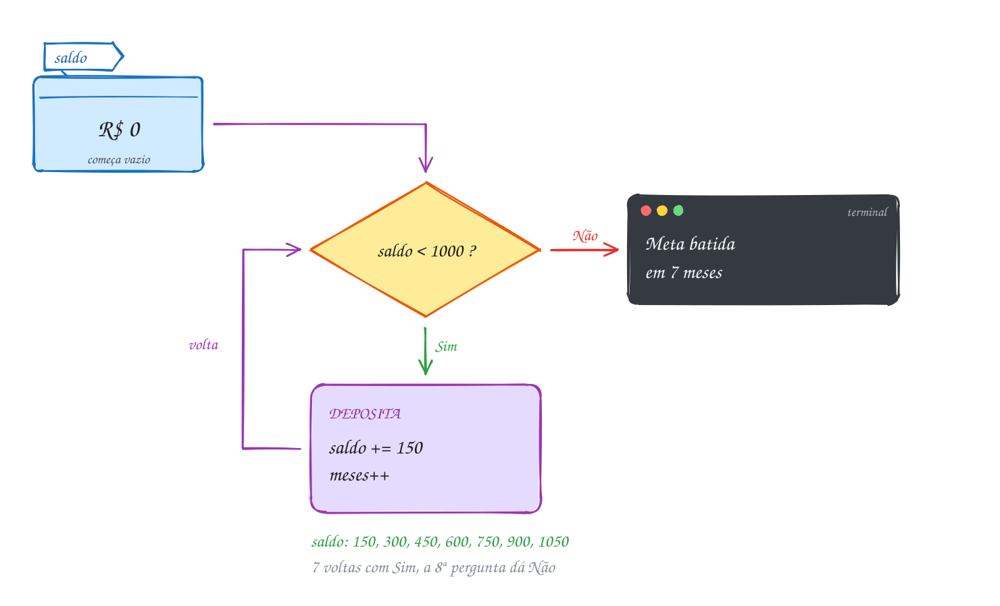
#include <stdio.h>
int main(void) {
double meta = 1000.0; // o celular custa R$ 1000
double deposito = 150.0; // quanto você guarda por mês
double saldo = 0.0;
int meses = 0;
while (saldo < meta) { // pergunta ANTES de cada volta
saldo = saldo + deposito;
meses++;
printf("Mês %d: R$ %.2f\n", meses, saldo);
}
printf("Meta batida em %d meses. Sobra R$ %.2f\n", meses, saldo - meta);
return 0;
}
// Saída:
// Mês 1: R$ 150.00
// Mês 2: R$ 300.00
// Mês 3: R$ 450.00
// Mês 4: R$ 600.00
// Mês 5: R$ 750.00
// Mês 6: R$ 900.00
// Mês 7: R$ 1050.00
// Meta batida em 7 meses. Sobra R$ 50.00
No teste de mesa (uma linha por pergunta, uma coluna por variável), são 8 perguntas para 7 voltas: a última dá Não.
| Pergunta | saldo antes | saldo < 1000? |
saldo depois | meses |
|---|---|---|---|---|
| 1ª | 0 | Sim | 150 | 1 |
| 2ª | 150 | Sim | 300 | 2 |
| ... | ... | Sim | ... | ... |
| 7ª | 900 | Sim | 1050 | 7 |
| 8ª | 1050 | Não | (sai) | 7 |
A seta de "Mostrar mês e saldo" volta para o losango: assim a repetição aparece. O caminho verde passa várias vezes pelo Sim e uma pelo Não:
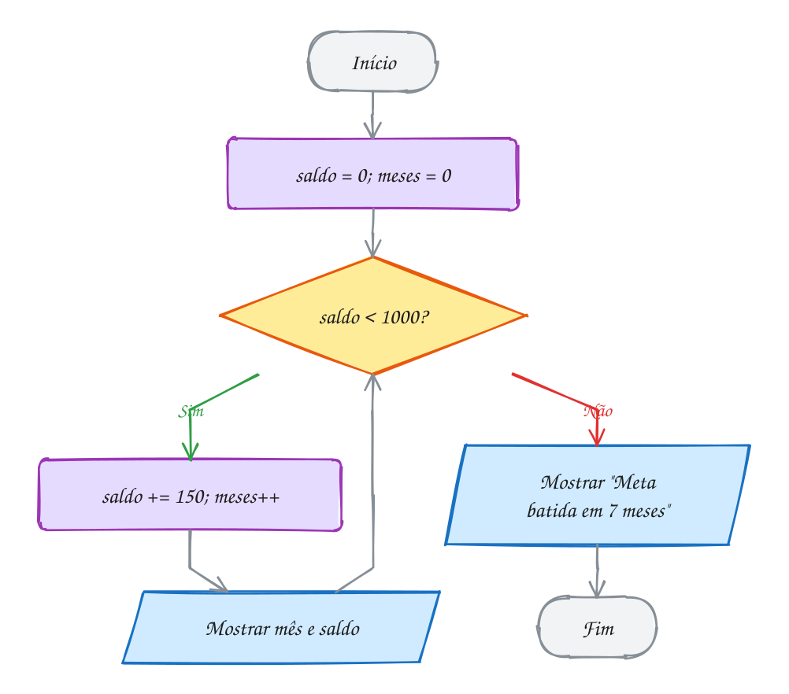
Exemplo A039 · Dividindo pizzas sem usar a divisão
#include <stdio.h>
int main(void) {
// 47 fatias para 5 amigos: quantas cada um come e quantas sobram?
int fatias = 47;
int amigos = 5;
int sobra = fatias;
int rodadas = 0; // cada rodada dá 1 fatia para cada amigo
while (sobra >= amigos) { // ainda dá uma rodada completa?
sobra = sobra - amigos;
rodadas++;
}
printf("%d fatias para %d amigos: %d para cada, sobram %d\n",
fatias, amigos, rodadas, sobra);
printf("Conferindo com / e %%: %d e %d\n", fatias / amigos, fatias % amigos);
// caso de borda: menos fatias que amigos. A pergunta já começa falsa
fatias = 3;
sobra = fatias;
rodadas = 0;
while (sobra >= amigos) { // 3 >= 5? Não: o corpo roda ZERO vezes
sobra = sobra - amigos;
rodadas++;
}
printf("%d fatias para %d amigos: %d para cada, sobram %d\n",
fatias, amigos, rodadas, sobra);
return 0;
}
// Saída:
// 47 fatias para 5 amigos: 9 para cada, sobram 2
// Conferindo com / e %: 9 e 2
// 3 fatias para 5 amigos: 0 para cada, sobram 3
gcc ~/LPEDC/material/A039.c -o ~/LPEDC/material/A039 && ~/LPEDC/material/A039
Exemplo A040 · Desmontando um número, dígito por dígito
#include <stdio.h>
int main(void) {
int numero = 4093;
int resto = numero; // cópia que vai sendo "comida"
int quantidade = 0;
int soma = 0;
printf("Dígitos de %d, da direita para a esquerda:", numero);
while (resto > 0) {
int digito = resto % 10; // o último dígito
printf(" %d", digito);
soma = soma + digito;
quantidade++;
resto = resto / 10; // tira o último dígito
}
printf("\n");
printf("Quantidade: %d\n", quantidade);
printf("Soma: %d\n", soma);
return 0;
}
// Saída:
// Dígitos de 4093, da direita para a esquerda: 3 9 0 4
// Quantidade: 4
// Soma: 16
gcc ~/LPEDC/material/A040.c -o ~/LPEDC/material/A040 && ~/LPEDC/material/A040
Exercício E116 · ★☆☆
Escreva um programa que mostre, com um while, os múltiplos de 7 menores que 50, todos na mesma linha e separados por espaço.
Saída esperada:
7 14 21 28 35 42 49
Exercício E117 · ★★☆
A caixa d'água tem 1000 litros e a casa gasta 180 litros por dia. Escreva um programa com um while que diz para quantos dias COMPLETOS a água dura e quantos litros sobram depois deles. Use as variáveis litros, consumo e dias.
Saída esperada:
Dá para 5 dias. Sobram 100 litros.
Exercício E118 · ★★☆
Você aplica R$ 1000.00 num investimento que rende 1% ao mês (juros sobre juros: todo mês o saldo é multiplicado por 1.01). Em quantos meses o saldo passa de R$ 1500.00? Mostre os meses e o saldo final com 2 casas.
Saída esperada:
Passou de R$ 1500.00 em 41 meses.
Saldo: R$ 1503.75
Exercício E120 · ★★★
Escreva um programa com três laços while, um depois do outro, cada um numa linha da saída. A linha começa com a letra do trecho, mostra os valores que o corpo imprime e termina com o número de voltas e o valor final da variável (use um contador por trecho):
A: int i = 0; while (i++ < 5) mostra i
B: int n = 100; while (n > 1) divide n por 3 e mostra o n novo
C: int k = 10; while (k < 10) soma 1 em k
Saída esperada:
A: 1 2 3 4 5 | voltas 5, i final 6
B: 33 11 3 1 | voltas 4, n final 1
C: | voltas 0, k final 10
A geladeira custa R$ 1.200 e o app pergunta: "em quantas parcelas (1 a 12)?".
Você digita 15, ele recusa e pergunta de novo. Repare na ordem: o app precisa
fazer a pergunta pelo menos uma vez antes de ter algo para conferir. Com o
while do assunto 0020, a conferência vem antes de tudo, e você teria de
inventar um valor inválido só para entrar no laço (parcelas = 0). O truque
funciona, mas esconde a intenção.
Pense numa prova de roupa. Você veste primeiro e só depois decide se serve; se
não serviu, troca e veste de novo. Ninguém decide se a roupa serve antes de
vestir. O do...while segue essa lógica: faz primeiro e pergunta
depois. Ele roda o corpo, testa a condição e, se ela for verdadeira, volta
ao começo do corpo (DEITEL; DEITEL, 2011, cap. 4).
do {
// corpo: roda pelo menos uma vez
} while (condição); // o ; no fim é obrigatório
Como a pergunta fica no fim, ele é o laço com teste no fim, também chamado
de pós-teste. A consequência é a diferença inteira em relação ao while: o
corpo roda uma ou mais vezes, nunca zero. Por isso você não precisa de
valor inicial falso para a variável da condição; a primeira volta acontece de
qualquer jeito e é ela que dá o primeiro valor (CARVALHO, 2010).
Um detalhe de escrita pega muita gente. No do...while, o while (...) do
fim é o último pedaço do comando, então leva ; logo depois do parêntese
(BACKES, 2013, cap. 5). Sem ele, o compilador acusa erro. É o oposto do
while comum, em que o ; depois do parêntese estraga o laço.
Use o do...while quando a primeira volta é obrigatória (BACKES, 2013, cap.
5). O caso mais comum é a validação de entrada: você lê o dado e repete a
leitura enquanto ele vier inválido. Outro é o menu: o programa mostra as
opções, executa a escolhida e repete até a pessoa escolher "sair" (o exemplo
A042 faz um caixa eletrônico assim). O terceiro é o "jogar de novo?": a
primeira partida sempre acontece, e só depois faz sentido perguntar.
Na validação, a condição descreve o valor inválido, porque é ele que faz o
programa perguntar de novo. Para parcelas de 1 a 12, o valor inválido é o que
fica abaixo de 1 ou acima de 12: parcelas < 1 || parcelas > 12 (DEITEL;
DEITEL, 2011, cap. 3). Leia em voz alta: "peça as parcelas enquanto forem
menores que 1 ou maiores que 12".
O pseudocódigo da prova costuma usar outra forma de pós-teste: repita ... até condição. Ele também testa no fim, mas a condição é de parar, não de
continuar. Para levar para C, você inverte a condição: repita ... até x > 10
vira do { ... } while (!(x > 10));, que é o mesmo que while (x <= 10)
(DORNELLES F., 1997). Na prova, confira sempre se o enunciado usa "enquanto"
ou "até" antes de contar as voltas.
[!WARNING] A condição é de continuar, não de parar. Quem escreve
while (parcelas >= 1 && parcelas <= 12)inverte o programa: repete com o 4 e aceita o 15. Para inverter uma condição com&&, use De Morgan (assunto 0013): o contrário dea && bé!a || !b.
A geladeira de R$ 1.200 em 1 a 12 parcelas. A pessoa digita 0, 15 e 4: os
dois primeiros caem fora da faixa e o programa pergunta de novo; o 4 passa. O
if em volta do scanf confere se chegou um número (0006):
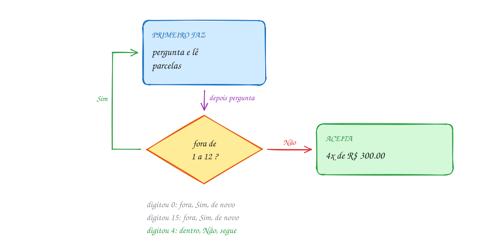
#include <stdio.h>
int main(void) {
double preco = 1200.0; // a geladeira
int parcelas;
do {
printf("Em quantas parcelas (1 a 12)? ");
if (scanf("%d", &parcelas) != 1) { // letra no lugar de número
printf("\nIsso não é um número.\n");
return 1;
}
} while (parcelas < 1 || parcelas > 12); // repete ENQUANTO for inválido
printf("%dx de R$ %.2f\n", parcelas, preco / parcelas);
return 0;
}
// Em quantas parcelas (1 a 12)? 0
// Em quantas parcelas (1 a 12)? 15
// Em quantas parcelas (1 a 12)? 4
// 4x de R$ 300.00
A leitura vem antes do losango, e a seta do Sim volta ao começo do corpo.
No while o losango abria o laço; aqui ele fecha:
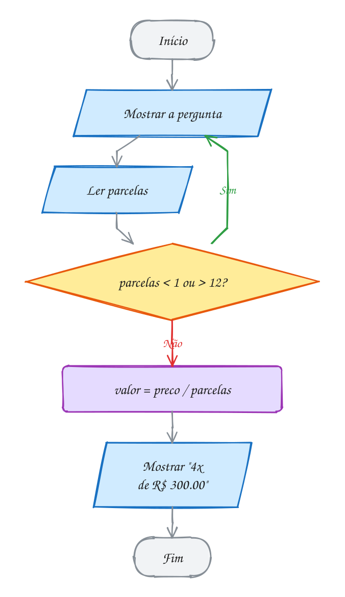
Exemplo A041 · Quantos dígitos tem o zero?
#include <stdio.h>
int main(void) {
int numero = 0;
int resto, digitos;
// com while: pergunta antes, e 0 > 0 já é falso
resto = numero;
digitos = 0;
while (resto > 0) {
resto = resto / 10;
digitos++;
}
printf("while: %d tem %d dígitos\n", numero, digitos);
// com do-while: conta o primeiro dígito antes de perguntar
resto = numero;
digitos = 0;
do {
resto = resto / 10;
digitos++;
} while (resto > 0);
printf("do-while: %d tem %d dígito\n", numero, digitos);
// para números maiores que zero, os dois concordam
numero = 2026;
resto = numero;
digitos = 0;
do {
resto = resto / 10;
digitos++;
} while (resto > 0);
printf("do-while: %d tem %d dígitos\n", numero, digitos);
return 0;
}
// Saída:
// while: 0 tem 0 dígitos
// do-while: 0 tem 1 dígito
// do-while: 2026 tem 4 dígitos
gcc ~/LPEDC/material/A041.c -o ~/LPEDC/material/A041 && ~/LPEDC/material/A041
Exemplo A042 · O menu do caixa eletrônico
#include <stdio.h>
int main(void) {
double saldo = 500.0;
double valor;
int opcao;
do {
printf("1 Saldo | 2 Sacar | 0 Sair: ");
if (scanf("%d", &opcao) != 1) {
opcao = 0; // entrada que não é número: encerra
}
switch (opcao) {
case 1:
printf("Saldo: R$ %.2f\n", saldo);
break;
case 2:
printf("Valor do saque: ");
if (scanf("%lf", &valor) == 1 && valor > 0 && valor <= saldo) {
saldo = saldo - valor;
printf("Retire R$ %.2f\n", valor);
} else {
printf("Saque recusado.\n");
}
break;
case 0:
printf("Até logo!\n");
break;
default:
printf("Opção inválida.\n");
}
} while (opcao != 0); // o menu aparece pelo menos uma vez
return 0;
}
// 1 Saldo | 2 Sacar | 0 Sair: 1
// Saldo: R$ 500.00
// 1 Saldo | 2 Sacar | 0 Sair: 2
// Valor do saque: 120
// Retire R$ 120.00
// 1 Saldo | 2 Sacar | 0 Sair: 2
// Valor do saque: 900
// Saque recusado.
// 1 Saldo | 2 Sacar | 0 Sair: 7
// Opção inválida.
// 1 Saldo | 2 Sacar | 0 Sair: 1
// Saldo: R$ 380.00
// 1 Saldo | 2 Sacar | 0 Sair: 0
// Até logo!
gcc ~/LPEDC/material/A042.c -o ~/LPEDC/material/A042 && ~/LPEDC/material/A042
Exercício E122 · ★☆☆
Escreva um programa com três trechos, um por linha de saída. Cada linha mostra os valores impressos pelo trecho e termina com o valor final da variável:
A: n = 10; while (n < 5) mostra n e soma 1
B: m = 10; do { mostra m e soma 1 } while (m < 5);
C: k = 10; o mesmo que o B, mas escrito com while (sem do-while)
Saída esperada:
| A terminou com n = 10
10 | B terminou com m = 11
10 | C terminou com k = 11
Exercício E123 · ★★☆
No caixa da padaria, a atendente digita o preço de cada item e o sistema pergunta "Mais algum item? (s/n)". Escreva o programa com do-while: lê um preço ("Preço:"), soma, pergunta e repete enquanto a resposta for s ou S. No fim, mostra quantos itens e o total com 2 casas. Cada pedido de leitura termina com quebra de linha (\n).
Entrada:
12.50
s
7.00
S
3.25
n
Saída esperada:
Preço:
Mais algum item? (s/n)
Preço:
Mais algum item? (s/n)
Preço:
Mais algum item? (s/n)
Itens: 3
Total: R$ 22.75
Exercício E124 · ★★☆
O totem do cinema oferece 3 sessões. Escreva o programa com do-while que pergunta "Sessão (1, 2 ou 3):" e repete a pergunta enquanto a opção for inválida. Quando a opção for válida, mostra "Sessão N escolhida.". Cada pedido de leitura termina com quebra de linha (\n).
Entrada:
7
2
Saída esperada:
Sessão (1, 2 ou 3):
Sessão (1, 2 ou 3):
Sessão 2 escolhida.
Exercício E125 · ★★★
A senha do cartão é 4321 e a pessoa tem 3 tentativas. Escreva o programa: lê a senha com do-while ("Senha:"), conta as tentativas e para quando acertar OU quando acabarem as tentativas. No fim, diz "Senha correta na tentativa N." ou, se errou as três, "Cartão bloqueado.". Cada pedido de leitura termina com quebra de linha (\n).
Entrada:
1111
2222
4321
Saída esperada:
Senha:
Senha:
Senha:
Senha correta na tentativa 3.
Com as entradas 1111, 2222 e 3333, a última linha da saída é "Cartão bloqueado.".
Você comprou uma TV de R$ 1.800 em 6 parcelas de R$ 300 e quer ver o carnê
inteiro, da parcela 1 à 6. Desta vez você sabe quantas voltas são antes de
começar. Esse é o laço com contador: uma variável começa num valor, anda
de passo em passo e para num valor conhecido (DEITEL; DEITEL, 2011, cap. 4).
Dá para escrever com while, mas o contador fica espalhado em três lugares:
int parcela = 1; // começa
while (parcela <= 6) { // pergunta
printf("Parcela %d\n", parcela);
parcela++; // passo, lá no fim do corpo
}
O começo está antes do laço, a pergunta no cabeçalho e o passo lá no fim do
corpo. Num corpo longo, o parcela++ some de vista, e esquecer dele dá laço
infinito. O for junta as três peças numa linha só, o cabeçalho, e deixa
o corpo livre para o trabalho (BACKES, 2013, cap. 5):
for (int parcela = 1; parcela <= 6; parcela++) {
printf("Parcela %d\n", parcela);
}
Pense na catraca do ônibus com contador. Ela começa zerada uma vez, no início
do dia; antes de cada passageiro, confere se ainda cabe gente; o passageiro
passa; e só depois que ele passou o número sobe. O for roda nessa mesma
ordem, que não é a ordem em que você lê a linha (CARVALHO, 2010). O início
(int parcela = 1) roda uma vez, antes de tudo. A condição
(parcela <= 6) é testada antes de cada volta; se der falso, o laço acaba. Se
der verdadeiro, roda o corpo. Por fim roda o passo (parcela++), e o
fluxo volta para a condição. Repare que o passo, escrito no meio do cabeçalho,
só acontece depois do corpo.
O for é o while de cima reorganizado; o compilador trata os dois do mesmo
jeito (KERNIGHAN; RITCHIE, 1988, cap. 3). A escolha é de leitura. Use for
quando há um contador com começo, fim e passo conhecidos, como o carnê. Use
while quando só se sabe a condição de parada, como o cofrinho do assunto
0020, em que o número de meses é a resposta.
O cabeçalho aceita várias formas (BACKES, 2013, cap. 5). A variável declarada
no início, como o int parcela, só existe dentro do laço; isso vale do padrão
C99 em diante e evita que o contador vaze para o resto do programa. O passo
pode ser qualquer conta: c += 10, s--, x *= 3. O contador pode ser
char, porque em C um caractere é um número. A vírgula permite controlar duas
variáveis ao mesmo tempo: for (int i = 1, j = 9; i < j; i++, j--). O exemplo
A044 mostra essas variações. Qualquer parte do cabeçalho pode ficar vazia, mas
os dois ; são obrigatórios: for (;;) não tem condição, roda para sempre e
é um laço infinito escrito de propósito.
Para saber quantas voltas um for dá sem rodar o programa, olhe o primeiro e
o último valor que passam pela condição (DEITEL; DEITEL, 2011, cap. 4). Em
for (i = a; i < b; i++), o contador vai de a até b - 1, o que dá
b - a voltas. Com <=, ele chega até o próprio b e dá b - a + 1. O
carnê, de 1 a 6 com <=, dá 6 voltas.
[!WARNING] O erro mais comum é o erro por um (off-by-one): uma volta a mais ou a menos.
for (int p = 1; p < 6; p++)mostra 5 parcelas. Pergunte qual é o primeiro e o último valor que passa. E contador é sempre inteiro:for (double x = 0.1; x != 1.0; x += 0.1)nunca termina, porque 0,1 não é exato em binário expula o 1,0.
Uma TV de R$ 1.800 em 6 parcelas. O carnê começa com parcela = 1 uma vez
só, pergunta "parcela <= 6?", roda o corpo, dá o passo e volta à pergunta; na
sétima, a resposta é Não:
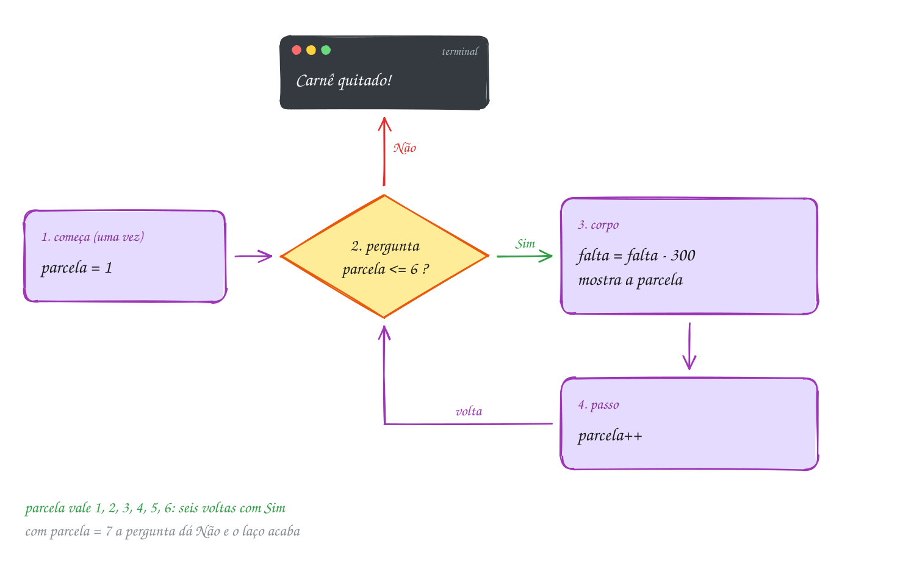
#include <stdio.h>
int main(void) {
double preco = 1800.0;
int total_parcelas = 6;
double valor = preco / total_parcelas;
double falta = preco;
for (int parcela = 1; parcela <= total_parcelas; parcela++) {
falta = falta - valor;
printf("Parcela %d/%d: R$ %.2f (falta R$ %.2f)\n",
parcela, total_parcelas, valor, falta);
}
printf("Carnê quitado!\n");
return 0;
}
// Saída:
// Parcela 1/6: R$ 300.00 (falta R$ 1500.00)
// Parcela 2/6: R$ 300.00 (falta R$ 1200.00)
// Parcela 3/6: R$ 300.00 (falta R$ 900.00)
// Parcela 4/6: R$ 300.00 (falta R$ 600.00)
// Parcela 5/6: R$ 300.00 (falta R$ 300.00)
// Parcela 6/6: R$ 300.00 (falta R$ 0.00)
// Carnê quitado!
O fluxograma é igual ao de um while: o passo parcela++ fica no fim do
corpo, e a seta sai dele de volta ao losango:
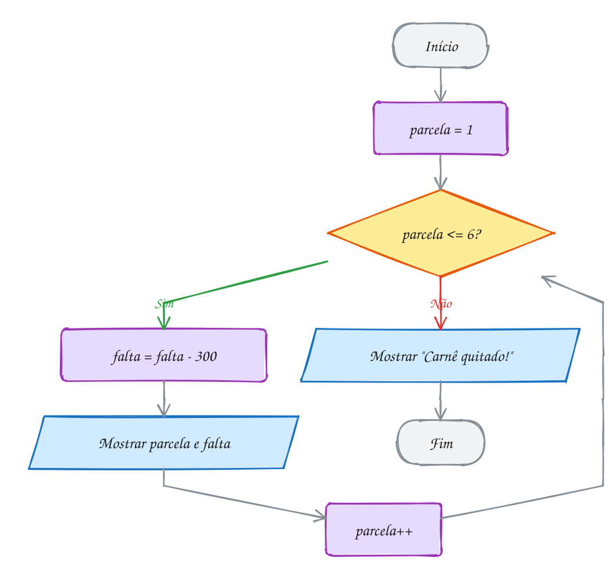
Exemplo A043 · Postes e vãos: o erro por um na cerca
#include <stdio.h>
int main(void) {
int comprimento = 30; // a cerca tem 30 metros
int espaco = 5; // um poste a cada 5 metros
int postes = 0;
int vaos = 0;
// postes: do metro 0 ATÉ o metro 30, inclusive (<=)
printf("Postes nos metros:");
for (int metro = 0; metro <= comprimento; metro += espaco) {
printf(" %d", metro);
postes++;
}
printf("\n");
// vãos: cada vão começa num poste, menos no último (<)
for (int metro = 0; metro < comprimento; metro += espaco) {
vaos++;
}
printf("Postes: %d | Vãos: %d\n", postes, vaos);
printf("Pela conta: %d vãos, %d postes\n",
comprimento / espaco, comprimento / espaco + 1);
return 0;
}
// Saída:
// Postes nos metros: 0 5 10 15 20 25 30
// Postes: 7 | Vãos: 6
// Pela conta: 6 vãos, 7 postes
gcc ~/LPEDC/material/A043.c -o ~/LPEDC/material/A043 && ~/LPEDC/material/A043
Exemplo A044 · De 10 em 10, para trás e com letras
#include <stdio.h>
int main(void) {
// passo de 10: tabela de temperatura
for (int c = 0; c <= 40; c += 10) {
double f = c * 1.8 + 32;
printf("%2d °C = %5.1f °F\n", c, f);
}
// para trás: contagem regressiva do réveillon
for (int s = 5; s >= 1; s--) {
printf("%d... ", s);
}
printf("Feliz Ano Novo!\n");
// char também é número: as fileiras do ônibus
for (char fileira = 'A'; fileira <= 'F'; fileira++) {
printf("%c ", fileira);
}
printf("\n");
// duas variáveis com vírgula: uma sobe, a outra desce
for (int i = 1, j = 9; i < j; i++, j--) {
printf("(%d,%d) ", i, j);
}
printf("\n");
return 0;
}
// Saída:
// 0 °C = 32.0 °F
// 10 °C = 50.0 °F
// 20 °C = 68.0 °F
// 30 °C = 86.0 °F
// 40 °C = 104.0 °F
// 5... 4... 3... 2... 1... Feliz Ano Novo!
// A B C D E F
// (1,9) (2,8) (3,7) (4,6)
gcc ~/LPEDC/material/A044.c -o ~/LPEDC/material/A044 && ~/LPEDC/material/A044
Exercício E128 · ★☆☆
Escreva um programa com os quatro laços abaixo, um depois do outro. Cada um mostra os valores de x numa linha que começa com a letra do laço e, no fim da linha, quantas voltas ele deu (use um contador para cada laço):
a) for (int x = 3; x <= 20; x += 4)
b) for (int x = 50; x > 30; x -= 6)
c) for (int x = 1; x >= 10; x++)
d) for (int x = 1; x < 100; x *= 3)
Saída esperada:
a) 3 7 11 15 19 (5 voltas)
b) 50 44 38 32 (4 voltas)
c) (0 voltas)
d) 1 3 9 27 81 (5 voltas)
Exercício E129 · ★★☆
Você aplica R$ 2000.00 num CDB que rende 0,8% ao mês. Mostre o saldo mês a mês durante 12 meses (todo mês o saldo é multiplicado por 1.008). No fim, mostre o resultado da fórmula dos juros compostos, saldo = 2000 * 1.008 elevado a 12, usando pow (assunto 0010).
Saída esperada:
Mês 1: R$ 2016.00
Mês 2: R$ 2032.13
Mês 3: R$ 2048.39
Mês 4: R$ 2064.77
Mês 5: R$ 2081.29
Mês 6: R$ 2097.94
Mês 7: R$ 2114.72
Mês 8: R$ 2131.64
Mês 9: R$ 2148.70
Mês 10: R$ 2165.88
Mês 11: R$ 2183.21
Mês 12: R$ 2200.68
Pela fórmula: R$ 2200.68
gcc ~/LPEDC/material/E129.c -o ~/LPEDC/material/E129 -lm && ~/LPEDC/material/E129
Exercício E130 · ★★☆
O treino manda fazer 5 séries de flexões. Escreva um programa com um for que mostra "Série 1" até "Série 5", uma por linha.
Saída esperada:
Série 1
Série 2
Série 3
Série 4
Série 5
Exercício E131 · ★★★
Dá para calcular pi com uma soma infinita (série de Leibniz):
pi = 4/1 - 4/3 + 4/5 - 4/7 + 4/9 - ...
Escreva um programa com um for que soma os primeiros 1000 termos e mostra o resultado com 6 casas.
Saída esperada:
pi ~ 3.140593
Até aqui, um laço só para quando a condição do cabeçalho dá falso, e cada volta roda o corpo inteiro. Às vezes isso não basta. Você só descobre que precisa parar no meio do corpo, depois de ler um dado. Ou descobre que um dado não presta e quer pular o resto da volta sem encerrar o laço.
No caixa do mercado, a atendente passa os produtos um a um. Se o leitor falha
e marca um preço negativo, ela ignora aquela leitura e passa o próximo. Quando
a compra acaba, ela digita 0 e fecha a conta. São dois atalhos na mesma
repetição: "pula este" e "para tudo". Em C, eles se chamam continue e
break (DEITEL; DEITEL, 2011, cap. 4).
O break sai do laço na hora. O que resta do corpo não roda, a
condição não é testada de novo e o programa segue na primeira linha depois da
} do laço. É o mesmo break que você usou no assunto 0018 para sair de um case no
switch (DEITEL; DEITEL, 2011, cap. 4).
O continue é mais brando: abandona só a volta atual. O resto do
corpo é pulado e o laço segue para a próxima volta. Onde ele cai depende do
laço (DEITEL; DEITEL, 2011, cap. 4). No for, o passo (i++) ainda roda e só
depois vem a condição. No while e no do...while, o salto vai direto para a
condição. Essa diferença parece pequena, mas é ela que decide se o contador
anda ou fica parado, como o alerta no fim deste texto mostra.
Os dois quase sempre aparecem dentro de um if, porque só fazem sentido
quando algo acontece: "se o preço for 0, saia" ou "se o preço for negativo,
pule" (BACKES, 2013, cap. 5). Um break solto, sem if, encerraria o laço
logo na primeira volta.
O break abre caminho para um laço muito usado: o while (1), que também
se escreve for (;;). A condição é sempre verdadeira, então quem decide a
saída é um break no meio do corpo (KERNIGHAN; RITCHIE, 1988, cap. 3). Ele
serve quando o motivo de parar só aparece depois de ler o dado. No caixa,
você lê o preço e só então descobre que é 0; um while comum teria de testar
um valor que ainda não foi lido.
Depois de um laço com break, às vezes você precisa saber por que ele
parou: porque a condição deu falso ou porque o break disparou? A resposta
muda o que o programa conclui. O exemplo A046 testa se um número é primo
assim: o laço procura um divisor e dá break ao achar um. Se chegou ao fim
sem break, nenhum divisor apareceu e o número é primo.
Por fim, o alcance. break e continue valem só para o laço mais
interno, aquele que os envolve mais de perto (BACKES, 2013, cap. 5). Com um
laço dentro de outro, o break de dentro encerra só o de dentro, e o de fora
continua. O C não tem um break que saia de dois laços de uma vez. Existe o
goto, que salta para um rótulo em qualquer ponto da função, mas ele embaralha
o caminho do programa e deve ser evitado.
[!WARNING]
continuenumwhilepode pular o passo. Emwhile (i < 10) { if (i == 5) continue; printf("%d", i); i++; }, quandoichega a 5, ocontinuevolta à pergunta sem passar peloi++:ifica 5 para sempre. Nofor, o mesmo código funciona, porque oi++está no cabeçalho e roda mesmo comcontinue.
No caixa do mercado entram 12,90, uma leitura com erro (-1), 8,50, 4,00 e, para
fechar, 0. O -1 cai no continue e volta direto à leitura, sem passar pela
soma; o 0 cai no break e sai do laço:
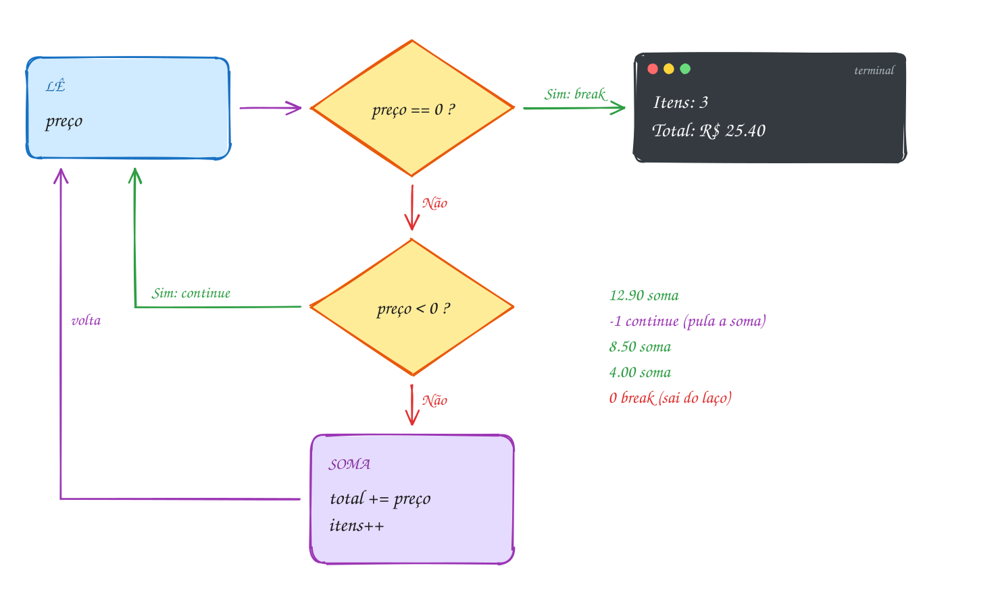
#include <stdio.h>
int main(void) {
double preco;
double total = 0.0;
int itens = 0;
int ignorados = 0;
while (1) { // "para sempre": quem decide a saída é o break
printf("Preço (0 encerra): ");
if (scanf("%lf", &preco) != 1) {
break; // entrada acabou ou não é número
}
if (preco == 0) {
break; // fim da compra: sai do laço
}
if (preco < 0) {
printf(" leitura inválida, passe de novo\n");
ignorados++;
continue; // pula o resto e volta para o while
}
total = total + preco;
itens++;
}
printf("Itens: %d | Ignorados: %d\n", itens, ignorados);
printf("Total: R$ %.2f\n", total);
return 0;
}
// Preço (0 encerra): 12.90
// Preço (0 encerra): -1
// leitura inválida, passe de novo
// Preço (0 encerra): 8.50
// Preço (0 encerra): 4.00
// Preço (0 encerra): 0
// Itens: 3 | Ignorados: 1
// Total: R$ 25.40
O laço tem duas setas de volta para "Ler preço": a do continue, que pula
a soma, e a do fim normal do corpo. A única saída é o Sim de
"preço == 0?", o break:
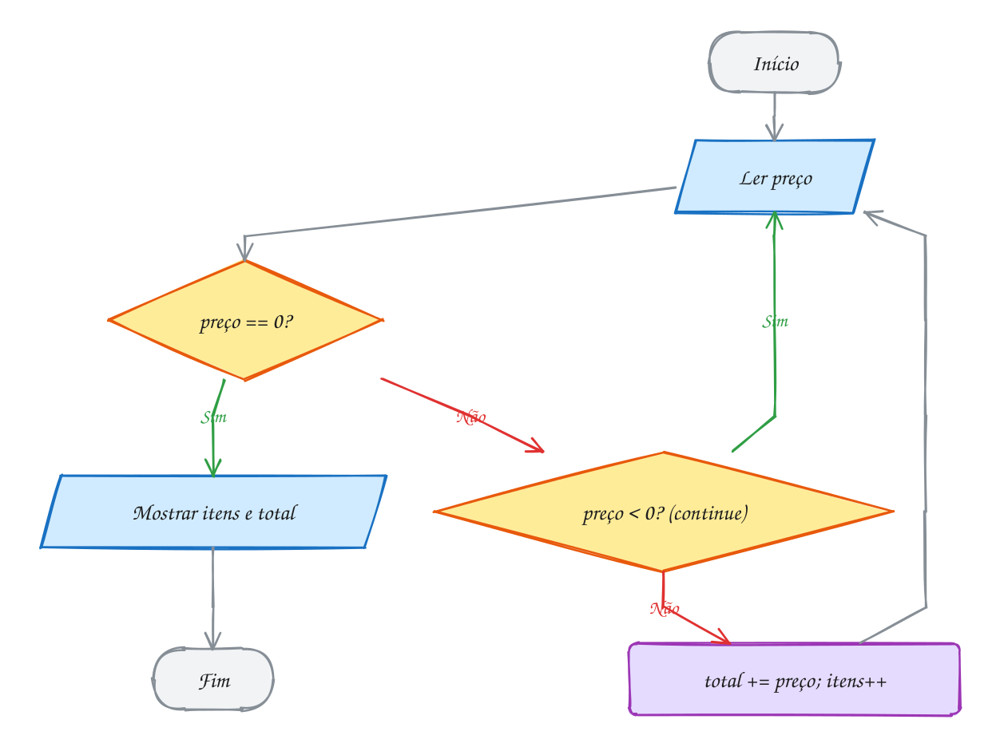
Exemplo A045 · Poltronas da excursão: continue com o passo no topo
#include <stdio.h>
int main(void) {
int alunos = 10; // a excursão leva 10 alunos
int poltrona = 0; // última poltrona olhada
int reservadas = 0;
// a sala tem 20 poltronas; as de número múltiplo de 5 estão quebradas
printf("Poltronas reservadas:");
while (poltrona < 20) {
poltrona++; // o passo vem PRIMEIRO: o continue não o pula
if (poltrona % 5 == 0) {
continue; // quebrada: volta para a pergunta do while
}
printf(" %d", poltrona);
reservadas++;
if (reservadas == alunos) {
break; // todo mundo sentado: para de procurar
}
}
printf("\n");
printf("Reservadas: %d | Última poltrona olhada: %d\n", reservadas, poltrona);
return 0;
}
// Saída:
// Poltronas reservadas: 1 2 3 4 6 7 8 9 11 12
// Reservadas: 10 | Última poltrona olhada: 12
gcc ~/LPEDC/material/A045.c -o ~/LPEDC/material/A045 && ~/LPEDC/material/A045
Exemplo A046 · É primo? Para no primeiro divisor
#include <stdio.h>
int main(void) {
int n = 91;
int divisor;
int testes = 0;
for (divisor = 2; divisor < n; divisor++) {
testes++;
if (n % divisor == 0) {
break; // achou um divisor: não precisa testar o resto
}
}
// por que o laço parou? pela condição ou pelo break?
if (divisor == n) {
printf("%d é primo (%d testes)\n", n, testes);
} else {
printf("%d = %d x %d, não é primo (%d testes)\n", n, divisor, n / divisor, testes);
}
// continue: só os números de 1 a 15 que não são múltiplos de 3
for (int i = 1; i <= 15; i++) {
if (i % 3 == 0) {
continue; // pula o printf, mas o i++ do for ainda roda
}
printf("%d ", i);
}
printf("\n");
return 0;
}
// Saída:
// 91 = 7 x 13, não é primo (6 testes)
// 1 2 4 5 7 8 10 11 13 14
gcc ~/LPEDC/material/A046.c -o ~/LPEDC/material/A046 && ~/LPEDC/material/A046
Exercício E134 · ★☆☆
Escreva um programa com um for de i = 1 a 10 que mostra os valores de i numa linha, mas pula (continue) os múltiplos de 4 e para (break) quando i for 7. No fim da linha, mostra quantas vezes o continue aconteceu. Na linha seguinte, repita o laço com um contador novo, mas agora o break testa i == 8.
Saída esperada:
1 2 3 5 6 (continue: 1 vez)
1 2 3 5 6 7 9 10 (continue: 2 vezes)
Exercício E135 · ★★☆
O elevador aguenta 600 kg e até 8 pessoas. As pessoas entram uma a uma; o programa lê o peso de cada uma ("Peso da pessoa N:", no máximo 8 leituras) e, se a próxima passar do limite de peso, ela espera e ninguém mais entra ("A pessoa N (P kg) espera o próximo."). No fim, mostra quantas entraram e o peso total. Cada pedido de leitura termina com quebra de linha (\n).
Entrada:
80
95
110
70
120
90
60
Saída esperada:
Peso da pessoa 1:
Peso da pessoa 2:
Peso da pessoa 3:
Peso da pessoa 4:
Peso da pessoa 5:
Peso da pessoa 6:
Peso da pessoa 7:
A pessoa 7 (60 kg) espera o próximo.
Entraram 6 pessoas, 565 kg.
Exercício E136 · ★★☆
Um sensor manda até 5 códigos: 1 = normal, 2 = alerta, 9 = desligou. Escreva o programa que lê os códigos com um for e um switch e mostra "normal", "alerta" ou "sensor desligou" (qualquer outro: "código desconhecido"). O laço tem que parar de ler no 9. No fim, mostra "Leituras: N".
Entrada:
1
2
9
1
2
Saída esperada:
normal
alerta
sensor desligou
Leituras: 3
Exercício E138 · ★★★
Escreva um programa que lê notas ("Nota (-1 encerra):") e calcula a média, sem usar break nem continue: use uma variável bool (assunto 0012) na condição do while e if/else no corpo. Nota negativa (ou entrada inválida) encerra; nota maior que 10 é ignorada e mostra " nota X ignorada" (1 casa); as demais entram na soma. Se houve alguma nota válida, mostra a média. Cada pedido de leitura termina com quebra de linha (\n).
Entrada:
8
12
6.5
9
-1
Saída esperada:
Nota (-1 encerra):
Nota (-1 encerra):
nota 12.0 ignorada
Nota (-1 encerra):
Nota (-1 encerra):
Nota (-1 encerra):
Média de 3 notas: 7.83
Uma sala de cinema tem 4 fileiras, de A a D, com 5 poltronas cada. Para imprimir o mapa da sala, você percorre a fileira A da poltrona 1 à 5, desce para a B e faz tudo de novo, até a D. Repare que há duas repetições, uma dentro da outra: a das fileiras e, para cada fileira, a das poltronas. Um laço só não dá conta disso.
O nome dessa construção é laço aninhado: o corpo de um laço contém outro laço inteiro (BACKES, 2013, cap. 5). A regra que governa tudo é esta: a cada volta do laço de fora, o laço de dentro roda do começo ao fim. Pense no relógio de ponteiros. O dos minutos dá uma volta completa a cada hora, e só então o das horas avança uma casa. O de fora é o das horas; o de dentro, o dos minutos.
Da regra sai a primeira consequência: o contador de dentro recomeça a cada
volta de fora (BACKES, 2013, cap. 5). No for, isso é automático, porque o
início do cabeçalho (int poltrona = 1) roda de novo toda vez que o laço de
dentro começa. No while, o início fica fora do laço, e você precisa zerar o
contador à mão antes de cada nova fileira. Esquecer disso faz o laço de dentro
rodar só na primeira fileira, porque nas seguintes o contador já está no fim.
O exercício E142 mostra esse estrago.
A segunda consequência é a conta de voltas. O corpo do laço de dentro roda (voltas de fora) × (voltas de dentro) vezes (DEITEL; DEITEL, 2011, cap. 4). No cinema, são 4 × 5 = 20 poltronas impressas. Essa conta vale quando o laço de dentro tem sempre o mesmo tamanho.
Ele nem sempre tem. A terceira consequência é que o limite de dentro pode
depender do contador de fora (DEITEL; DEITEL, 2011, cap. 4). Com
for (int col = 1; col <= linha; col++), a linha 1 tem 1 asterisco, a linha 2
tem 2, a linha 3 tem 3, e o desenho vira um triângulo. O exemplo A048 faz
isso. Aqui a conta de voltas deixa de ser multiplicação e vira soma:
1 + 2 + 3 + ... até a última linha.
A multiplicação também mostra o custo de um laço aninhado. Com 4 × 5, não há o que medir. Mas comparar 1.000 clientes com 1.000 pedidos, cada um contra cada um, dá 1 milhão de comparações. Quando o tamanho da entrada dobra, o trabalho quadruplica. É o crescimento quadrático, o O(n²) que o módulo de análise de algoritmos estuda (CELES; CERQUEIRA; RANGEL, 2016). Ao ver um laço dentro de outro, faça a conta antes de rodar com dados grandes.
Com dois contadores no ar, o nome pesa. Use nomes que digam quem é quem:
fileira e poltrona, linha e coluna. Com i e j, é fácil trocar um
pelo outro numa condição ou num printf sem perceber, e o programa compila do
mesmo jeito. Lembre também que break e continue valem só para o laço mais
interno (assunto 0023): um break no laço das poltronas encerra a fileira
atual, não o mapa.
[!WARNING] O
printf("\n")no lugar errado muda o desenho: dentro do laço de dentro, sai uma poltrona por linha; fora dos dois, tudo numa linha. Pergunte: isto acontece uma vez por poltrona, uma vez por fileira ou uma vez no programa? A resposta diz em que nível o comando vai.
O mapa de um cinema com 4 fileiras (A a D) de 5 poltronas. O desenho congela
o meio do caminho: a fileira A já saiu inteira, a B está na poltrona 3, e a C
e a D esperam o laço de fora. O printf("\n") fica entre os dois laços:
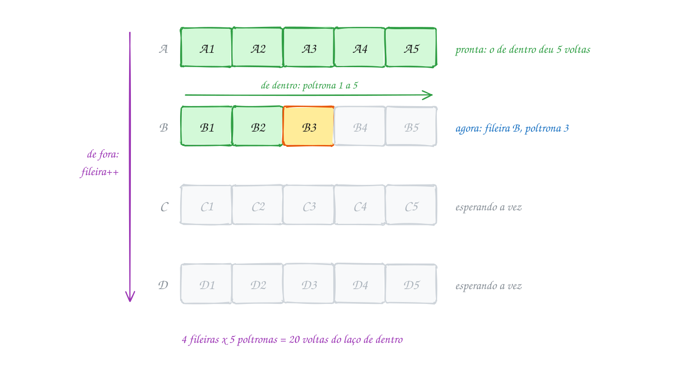
#include <stdio.h>
int main(void) {
int lugares = 0;
for (char fileira = 'A'; fileira <= 'D'; fileira++) { // laço de fora
for (int poltrona = 1; poltrona <= 5; poltrona++) { // laço de dentro
printf("%c%d ", fileira, poltrona);
lugares++;
}
printf("\n"); // acabou a fileira: pula linha
}
printf("Total: %d lugares\n", lugares);
return 0;
}
// Saída:
// A1 A2 A3 A4 A5
// B1 B2 B3 B4 B5
// C1 C2 C3 C4 C5
// D1 D2 D3 D4 D5
// Total: 20 lugares
São dois losangos, cada um com sua seta de volta; a volta pequena fica
dentro da grande. Logo depois do Sim de fora vem poltrona = 1: ali o
laço de dentro recomeça:
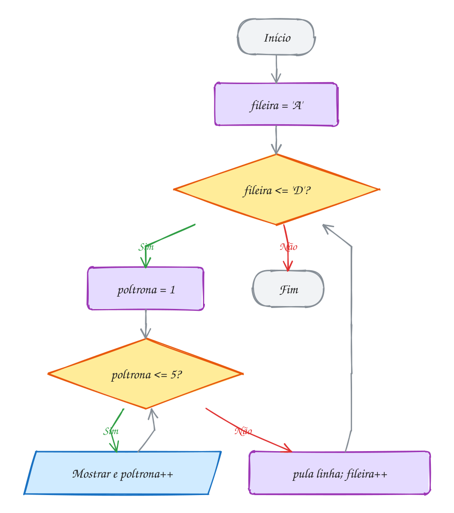
Exemplo A047 · As horas capicua do relógio digital
#include <stdio.h>
int main(void) {
int voltas = 0;
int capicuas = 0;
// de 00:00 a 23:59: o minuto dá a volta inteira a cada hora
for (int hora = 0; hora <= 23; hora++) { // laço de fora
for (int minuto = 0; minuto <= 59; minuto++) { // laço de dentro
voltas++;
// hh:mm se lê igual de trás para frente: 12:21, 05:50...
if (hora / 10 == minuto % 10 && hora % 10 == minuto / 10) {
printf("%02d:%02d ", hora, minuto);
capicuas++;
if (capicuas % 8 == 0) {
printf("\n");
}
}
}
}
printf("Horários testados: %d (24 x 60)\n", voltas);
printf("Capicuas: %d\n", capicuas);
return 0;
}
// Saída:
// 00:00 01:10 02:20 03:30 04:40 05:50 10:01 11:11
// 12:21 13:31 14:41 15:51 20:02 21:12 22:22 23:32
// Horários testados: 1440 (24 x 60)
// Capicuas: 16
gcc ~/LPEDC/material/A047.c -o ~/LPEDC/material/A047 && ~/LPEDC/material/A047
Exemplo A048 · Triângulos de asteriscos: o de dentro depende do de fora
#include <stdio.h>
int main(void) {
int altura = 5;
// linha 1 tem 1 asterisco, linha 2 tem 2... o limite de dentro é "linha"
for (int linha = 1; linha <= altura; linha++) {
for (int col = 1; col <= linha; col++) {
printf("*");
}
printf("\n");
}
printf("\n");
// de cabeça para baixo: espaços à esquerda, depois os asteriscos
for (int linha = altura; linha >= 1; linha--) {
for (int esp = 1; esp <= altura - linha; esp++) {
printf(" ");
}
for (int col = 1; col <= linha; col++) {
printf("*");
}
printf("\n");
}
return 0;
}
// Saída:
// *
// **
// ***
// ****
// *****
//
// *****
// ****
// ***
// **
// *
gcc ~/LPEDC/material/A048.c -o ~/LPEDC/material/A048 && ~/LPEDC/material/A048
Exercício E140 · ★☆☆
Escreva dois laços for aninhados: para i de 1 a 3, a linha i mostra os produtos i * j com j de 1 até i. Use um contador de quantas vezes o printf de dentro rodou e mostre-o depois dos dois laços.
Saída esperada:
1
2 4
3 6 9
printf de dentro: 6 vezes
Exercício E141 · ★★☆
Monte a tábua de multiplicação de 1 a 9 como uma tabela, com cabeçalho e margem. Cada número ocupa 4 posições (%4d).
Saída esperada:
x | 1 2 3 4 5 6 7 8 9
----+------------------------------------
1 | 1 2 3 4 5 6 7 8 9
2 | 2 4 6 8 10 12 14 16 18
3 | 3 6 9 12 15 18 21 24 27
4 | 4 8 12 16 20 24 28 32 36
5 | 5 10 15 20 25 30 35 40 45
6 | 6 12 18 24 30 36 42 48 54
7 | 7 14 21 28 35 42 49 56 63
8 | 8 16 24 32 40 48 56 64 72
9 | 9 18 27 36 45 54 63 72 81
Exercício E142 · ★★☆
A escola quer a lista de chamada de 3 turmas com 4 alunos cada, uma turma por linha, no formato T1-A1 T1-A2 ... Escreva o programa com dois while aninhados (um para a turma, outro para o aluno).
Saída esperada:
T1-A1 T1-A2 T1-A3 T1-A4
T2-A1 T2-A2 T2-A3 T2-A4
T3-A1 T3-A2 T3-A3 T3-A4
Exercício E143 · ★★★
Desenhe uma pirâmide centralizada com a altura lida do teclado ("Altura:", aceite de 1 a 20; confira o retorno do scanf). Cada pedido de leitura termina com quebra de linha (\n).
Entrada:
5
Saída esperada:
Altura:
*
***
*****
*******
*********
Fim de semana de calor e você anotou a máxima de cada dia: 28, 31, 36, 25 e 30 °C. Agora quer saber quantos dias foram, qual a média, qual o dia mais quente e o mais frio, e se teve algum dia de 35 °C ou mais. O laço que lê as temperaturas você já sabe escrever. A dúvida é o que fazer com cada valor lido para que, no fim, as respostas estejam prontas.
Cada uma dessas perguntas tem uma solução conhecida, um padrão de laço: um jeito de usar uma variável que já foi resolvido milhares de vezes e que você só precisa reconhecer (DEITEL; DEITEL, 2011, cap. 3). Todos seguem o mesmo roteiro em três tempos. A variável ganha um valor antes do laço, é atualizada dentro dele e é usada depois. Errar qualquer um dos três tempos dá resposta errada, mesmo com o laço certo.
O contador responde "quantos?". Começa em 0 e soma 1 a cada volta:
dias++. O acumulador responde "quanto ao todo?". Também começa em 0, mas
soma o valor lido: soma += temp (DEITEL; DEITEL, 2011, cap. 3). Com os dois,
a média sai depois do laço. O acumulador também multiplica, e aí muda o ponto
de partida: um produto começa em 1, porque começar em 0 zera tudo na
primeira volta.
O maior e o menor guardam o recorde até agora. A cada valor lido, você
compara com o recorde e troca se o novo for melhor:
if (temp > maior) maior = temp. A pegadinha está no primeiro tempo. O
recorde começa com o primeiro valor lido, nunca com um número inventado
como 0, porque o 0 pode vencer todos os valores reais (BACKES, 2013, cap. 5).
O alerta no fim do texto mostra o caso.
A flag (bandeira) responde "aconteceu alguma vez?". É uma variável bool
que começa false e sobe para true quando o caso aparece:
if (temp >= 35) calorao = true. Ela só sobe, nunca desce. Se você puser um
else calorao = false, um dia de 25 °C depois do de 36 apaga a resposta, e a
flag passa a dizer só se o último dia foi quente (LEAL, 2016).
A sentinela resolve outro problema: como avisar ao programa que os dados acabaram. Ela é um valor que não pode ser dado real e só serve para mandar parar (DEITEL; DEITEL, 2011, cap. 3). Temperatura pode ser 0 ou negativa, então a sentinela aqui é 999. Ela não entra em conta nenhuma: o laço testa o valor antes de contar ou somar.
Para isso funcionar, a leitura aparece em dois lugares: uma vez antes do
laço e outra no fim do corpo. Essa é a leitura antecipada. Com ela, a
pergunta do while sempre olha um valor que acabou de chegar, e a sentinela é
barrada antes de entrar no corpo (DEITEL; DEITEL, 2011, cap. 3).
A média pede dois cuidados. O primeiro é o tipo: soma / dias com dois int
descarta os decimais, então você escreve (double) soma / dias, com o cast do
assunto 0008. O segundo é o zero: se a primeira entrada for a sentinela,
dias fica 0. Com double, 0 / 0 dá nan (not a number); com int, o
programa quebra. Teste dias > 0 antes de dividir. E o acumulador tem os
limites do tipo: um int que passa de 2.147.483.647 estoura, e somar 0,1 em
double acumula erro de arredondamento. Para dinheiro, some centavos num
long long e divida por 100 só ao mostrar (DEITEL; DEITEL, 2011).
A tabela junta os padrões para consulta:
| Padrão | Antes do laço | Dentro do laço | Depois |
|---|---|---|---|
| contador | dias = 0 |
dias++ |
quantos foram |
| acumulador | soma = 0 (produto: = 1) |
soma += temp |
total, média |
| maior/menor | o primeiro valor | if (temp > maior) maior = temp |
o recorde |
| flag | calorao = false |
if (temp >= 35) calorao = true |
aconteceu ou não? |
| sentinela | ler o primeiro valor | ler o próximo, no fim | (o laço para nela) |
[!WARNING]
maior = 0parece inofensivo, até o inverno: com máximas de -3, -1 e -4 °C, o programa diz que o dia mais quente teve 0 °C, um dia que nunca existiu. Comece com o primeiro valor lido ou comINT_MIN(eINT_MAXpara o menor), de<limits.h>.
As máximas de cinco dias: 28, 31, 36, 25 e 30 °C, e 999 como sentinela (uma temperatura pode ser 0 ou negativa). Cada valor atualiza as caixinhas; o 999 só manda parar:
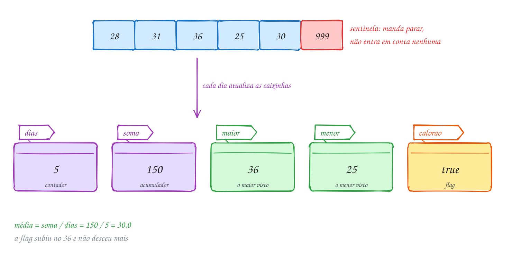
#include <stdbool.h>
#include <stdio.h>
int main(void) {
const int FIM = 999; // sentinela: nenhuma temperatura real vale 999
int temp;
int dias = 0; // contador
int soma = 0; // acumulador
int maior = 0, menor = 0; // só valem depois do 1º dia
bool calorao = false; // flag: algum dia passou de 35?
printf("Máxima do dia (999 encerra): ");
if (scanf("%d", &temp) != 1) {
temp = FIM;
}
while (temp != FIM) {
dias++;
soma += temp;
if (dias == 1 || temp > maior) {
maior = temp;
}
if (dias == 1 || temp < menor) {
menor = temp;
}
if (temp >= 35) {
calorao = true; // levanta a flag e não abaixa mais
}
printf("Máxima do dia (999 encerra): ");
if (scanf("%d", &temp) != 1) {
temp = FIM;
}
}
if (dias == 0) {
printf("Nenhum dia lido.\n");
return 0;
}
printf("Dias: %d\n", dias);
printf("Média: %.1f °C\n", (double) soma / dias);
printf("Maior: %d °C | Menor: %d °C\n", maior, menor);
printf("Teve dia de 35 °C ou mais? %s\n", calorao ? "sim" : "não");
return 0;
}
// Máxima do dia (999 encerra): 28
// Máxima do dia (999 encerra): 31
// Máxima do dia (999 encerra): 36
// Máxima do dia (999 encerra): 25
// Máxima do dia (999 encerra): 30
// Máxima do dia (999 encerra): 999
// Dias: 5
// Média: 30.0 °C
// Maior: 36 °C | Menor: 25 °C
// Teve dia de 35 °C ou mais? sim
Há duas caixas de leitura: "Ler temp", antes do losango, e "Ler a próxima temp", no fim do corpo, de onde sai a seta de volta:
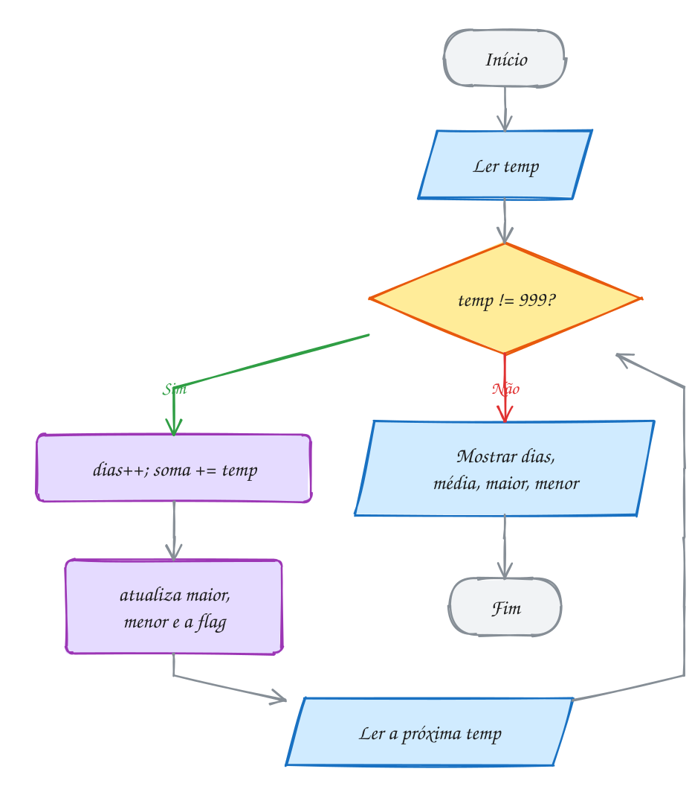
Exemplo A049 · Inverno na serra: maior e menor com INT_MIN e INT_MAX
#include <limits.h>
#include <stdbool.h>
#include <stdio.h>
int main(void) {
const int FIM = 999; // sentinela
int temp;
int dias = 0; // contador
int soma = 0; // acumulador
int geada = 0; // contador com condição: dias com máxima <= 0
int maior = INT_MIN; // qualquer temperatura ganha do menor int
int menor = INT_MAX; // qualquer temperatura perde do maior int
bool esquentou = false; // flag: algum dia passou de 0 °C?
// ler e testar a sentinela na própria pergunta do while
printf("Máxima do dia (999 encerra): ");
while (scanf("%d", &temp) == 1 && temp != FIM) {
dias++;
soma += temp;
if (temp > maior) {
maior = temp; // sem o "dias == 1 ||": INT_MIN cuida disso
}
if (temp < menor) {
menor = temp;
}
if (temp <= 0) {
geada++;
} else {
esquentou = true;
}
printf("Máxima do dia (999 encerra): ");
}
if (dias == 0) {
printf("Nenhum dia lido.\n");
return 0;
}
printf("Dias: %d | Com máxima até 0 °C: %d\n", dias, geada);
printf("Média: %.1f °C\n", (double) soma / dias);
printf("Maior: %d °C | Menor: %d °C\n", maior, menor);
printf("Algum dia acima de 0 °C? %s\n", esquentou ? "sim" : "não");
return 0;
}
// Máxima do dia (999 encerra): -3
// Máxima do dia (999 encerra): -1
// Máxima do dia (999 encerra): -4
// Máxima do dia (999 encerra): 999
// Dias: 3 | Com máxima até 0 °C: 3
// Média: -2.7 °C
// Maior: -1 °C | Menor: -4 °C
// Algum dia acima de 0 °C? não
gcc ~/LPEDC/material/A049.c -o ~/LPEDC/material/A049 && ~/LPEDC/material/A049
Exemplo A050 · Os divisores de 28: contar, somar e levantar uma flag
#include <stdbool.h>
#include <stdio.h>
int main(void) {
int n = 28;
int quantos = 0; // contador: começa em 0
int soma = 0; // acumulador de soma: começa em 0
long produto = 1; // acumulador de produto: começa em 1!
printf("Divisores de %d:", n);
for (int d = 1; d <= n; d++) {
if (n % d == 0) {
printf(" %d", d);
quantos++;
if (d < n) {
soma += d; // só os divisores próprios (menores que n)
}
produto *= d;
}
}
printf("\n");
bool perfeito = (soma == n); // a flag pode nascer de uma comparação
printf("Quantos: %d\n", quantos);
printf("Soma dos próprios: %d\n", soma);
printf("Produto de todos: %ld\n", produto);
printf("%d é perfeito? %s\n", n, perfeito ? "sim" : "não");
return 0;
}
// Saída:
// Divisores de 28: 1 2 4 7 14 28
// Quantos: 6
// Soma dos próprios: 28
// Produto de todos: 21952
// 28 é perfeito? sim
gcc ~/LPEDC/material/A050.c -o ~/LPEDC/material/A050 && ~/LPEDC/material/A050
Exercício E145 · ★☆☆
Leia as 5 notas de um aluno com um for ("Nota N:"). Mostre a soma, a média (1 casa) e em quantas provas ele tirou 6 ou mais. Cada pedido de leitura termina com quebra de linha (\n).
Entrada:
7
4.5
8
6
9.5
Saída esperada:
Nota 1:
Nota 2:
Nota 3:
Nota 4:
Nota 5:
Soma: 35.0
Média: 7.0
Provas com 6 ou mais: 4
Exercício E147 · ★★☆
Você anotou o preço da gasolina em 6 postos do caminho. Leia os 6 preços ("Posto N:") e mostre o mais barato e o mais caro, com o NÚMERO do posto de cada um, e a diferença entre eles. Cada pedido de leitura termina com quebra de linha (\n).
Entrada:
5.89
6.09
5.79
5.99
6.19
5.85
Saída esperada:
Posto 1:
Posto 2:
Posto 3:
Posto 4:
Posto 5:
Posto 6:
Mais barato: posto 3 (R$ 5.79)
Mais caro: posto 5 (R$ 6.19)
Diferença: R$ 0.40 por litro
Exercício E148 · ★★☆
A lanchonete anota o resultado de cada dia em reais (negativo é prejuízo) e digita 9999 para encerrar; o 9999 não conta como dia. Escreva o programa que lê os valores e mostra quantos dias foram, a média (2 casas) e o melhor dia.
Entrada:
-30
-10
-45
9999
Saída esperada:
Dias: 3
Média: -28.33
Melhor dia: -10
Exercício E149 · ★★★
Campeonato de skate: 8 notas de 0 a 100. Leia cada nota UMA vez ("Nota N:", sem guardar todas: vetores só no módulo 05) e mostre a maior e a segunda maior. Se duas pessoas empatarem no topo, a segunda maior é igual à maior. Cada pedido de leitura termina com quebra de linha (\n).
Entrada:
72
95
88
95
60
81
99
70
Saída esperada:
Nota 1:
Nota 2:
Nota 3:
Nota 4:
Nota 5:
Nota 6:
Nota 7:
Nota 8:
1º lugar: 99
2º lugar: 95
No jogo de tabuleiro, você caiu na prisão. Para sair, precisa tirar dupla
nos dois dados. Joga, não sai, joga de novo. A estrutura é um do...while
(assunto 0021), mas com uma peça que você ainda não tem: o resultado de cada
volta é sorteado. Até aqui, todo valor vinha de uma conta ou do teclado. Para
jogos, simulações e testes, o programa precisa de números que pareçam acaso.
O problema é que o computador não sorteia. Ele é determinístico: a mesma entrada dá sempre a mesma saída. A saída é gerar números pseudoaleatórios, uma sequência produzida por uma conta fixa em que cada número sai do anterior, mas que, olhada de fora, parece não seguir regra nenhuma (DEITEL; DEITEL, 2011, cap. 5). Pense num baralho que vem de fábrica sempre embaralhado na mesma ordem. As cartas parecem misturadas, mas quem souber a ordem prevê todas.
Em C, o gerador fica em <stdlib.h>. A função rand() devolve o próximo
número da sequência, um inteiro de 0 até a constante RAND_MAX. O padrão
da linguagem garante que RAND_MAX vale pelo menos 32767; na glibc, a
biblioteca do Linux, ele vale 2147483647 (CPPREFERENCE, s.d.). Como o valor
muda de um sistema para outro, o programa nunca deve contar com um RAND_MAX
específico.
Um dado só tem 6 faces, então você precisa trazer o número para a faixa
certa. A ferramenta é o resto da divisão (assunto 0007). O resto de qualquer
número por 6 fica entre 0 e 5; somando 1, fica entre 1 e 6. Daí vem
1 + rand() % 6. Para uma faixa qualquer de a até b, a quantidade de
valores possíveis é b - a + 1, e a fórmula vira
a + rand() % (b - a + 1) (DEITEL; DEITEL, 2011, cap. 5). Para sortear de 10
a 20, por exemplo: 10 + rand() % 11.
Falta escolher onde a sequência começa. Esse ponto de partida é a
semente, e a função srand(semente) o define. A mesma semente dá
sempre a mesma sequência. Se o programa não chamar srand, vale srand(1), e
toda execução sorteia os mesmos números (LINUX MAN-PAGES PROJECT, s.d.). No
baralho de fábrica, a semente diz de que ponto da pilha você começa a tirar
cartas.
A semente certa depende do objetivo (DEITEL; DEITEL, 2011, cap. 5). Uma
semente fixa, como srand(2022), sorteia sempre os mesmos números. Isso
ajuda a testar e depurar, porque o erro que apareceu uma vez volta a aparecer.
Os exemplos do curso usam semente fixa para a saída do comentário bater com a
sua. Já a semente do relógio, srand(time(NULL)) com <time.h>, usa
time(NULL), que devolve os segundos passados desde 1º de janeiro de 1970.
Cada execução começa num segundo diferente e sorteia outra sequência. Um jogo
de verdade usa esta.
Como a sequência inteira sai da semente, quem descobre a semente prevê todos
os números. Por isso o rand nunca serve para senha, token ou criptografia
(LINUX MAN-PAGES PROJECT, s.d.). Para esses casos o Linux oferece o
getrandom, e existem bibliotecas de criptografia feitas para isso.
[!WARNING]
srand(time(NULL))dentro do laço reinicia a sequência a cada volta. O laço roda em milissegundos, no mesmo segundo, então a semente é sempre a mesma e o dado "sorteia" 4, 4, 4... Osrandvai uma vez, no começo domain. E ele não devolve nada (évoid): quem sorteia é orand.
No jogo de tabuleiro, só sai da prisão quem tira dupla. A semente 2022
entra no gerador, o % 6 + 1 vira cada número numa face, e na quarta jogada
sai 4 e 4. A saída é a da glibc (Linux); em outro sistema, a sequência muda:
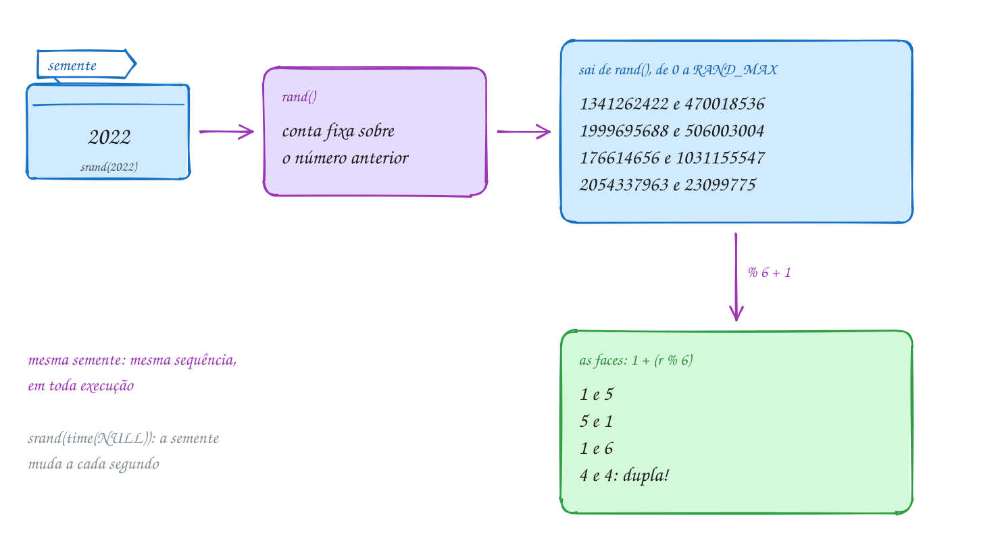
#include <stdio.h>
#include <stdlib.h> // rand e srand
int main(void) {
srand(2022); // semente fixa: a mesma sequência a cada execução
int dado1, dado2;
int jogadas = 0;
do {
dado1 = 1 + rand() % 6; // rand() % 6 vai de 0 a 5; + 1 vira 1 a 6
dado2 = 1 + rand() % 6;
jogadas++;
printf("Jogada %d: %d e %d\n", jogadas, dado1, dado2);
} while (dado1 != dado2);
printf("Dupla de %d na jogada %d. Saiu da prisão!\n", dado1, jogadas);
return 0;
}
// Saída (glibc, Linux; em outro sistema a sequência pode ser outra):
// Jogada 1: 1 e 5
// Jogada 2: 5 e 1
// Jogada 3: 1 e 6
// Jogada 4: 4 e 4
// Dupla de 4 na jogada 4. Saiu da prisão!
O srand fica fora do laço e roda uma vez; o sorteio fica dentro, e a
seta do Sim volta do losango para ele:
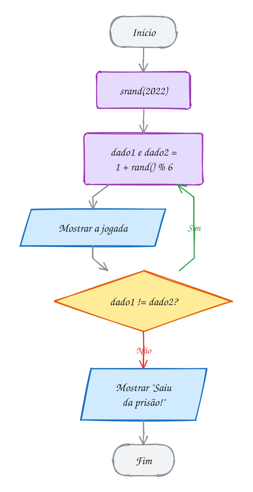
Exemplo A051 · Mesma semente, mesmo sorteio
#include <stdio.h>
#include <stdlib.h>
int main(void) {
// bingo da quermesse: 5 bolas de 1 a 75 (a + rand() % (b - a + 1))
srand(2026);
printf("Semente 2026: ");
for (int i = 0; i < 5; i++) {
printf("%3d", 1 + rand() % 75);
}
printf("\n");
// a mesma semente de novo: a sequência recomeça do mesmo ponto
srand(2026);
printf("Semente 2026 de novo:");
for (int i = 0; i < 5; i++) {
printf("%3d", 1 + rand() % 75);
}
printf("\n");
// outra semente: outra sequência
srand(2027);
printf("Semente 2027: ");
for (int i = 0; i < 5; i++) {
printf("%3d", 1 + rand() % 75);
}
printf("\n");
return 0;
}
// Saída (glibc, Linux; em outro sistema os números podem ser outros,
// mas as duas primeiras linhas continuam iguais entre si):
// Semente 2026: 38 73 74 70 62
// Semente 2026 de novo: 38 73 74 70 62
// Semente 2027: 54 29 7 5 53
gcc ~/LPEDC/material/A051.c -o ~/LPEDC/material/A051 && ~/LPEDC/material/A051
Exemplo A052 · 6000 lançamentos: o dado é honesto?
#include <stdio.h>
#include <stdlib.h>
#include <time.h> // time
int main(void) {
srand(42); // semente fixa, para a saída abaixo ser reproduzível
// srand((unsigned) time(NULL)); // use esta linha para variar a cada execução
int um = 0, dois = 0, tres = 0, quatro = 0, cinco = 0, seis = 0;
int total = 6000;
for (int i = 0; i < total; i++) {
switch (1 + rand() % 6) {
case 1: um++; break;
case 2: dois++; break;
case 3: tres++; break;
case 4: quatro++; break;
case 5: cinco++; break;
default: seis++;
}
}
printf("Face 1: %4d (%.1f%%)\n", um, 100.0 * um / total);
printf("Face 2: %4d (%.1f%%)\n", dois, 100.0 * dois / total);
printf("Face 3: %4d (%.1f%%)\n", tres, 100.0 * tres / total);
printf("Face 4: %4d (%.1f%%)\n", quatro, 100.0 * quatro / total);
printf("Face 5: %4d (%.1f%%)\n", cinco, 100.0 * cinco / total);
printf("Face 6: %4d (%.1f%%)\n", seis, 100.0 * seis / total);
return 0;
}
// Saída (glibc, Linux, semente 42):
// Face 1: 976 (16.3%)
// Face 2: 1001 (16.7%)
// Face 3: 978 (16.3%)
// Face 4: 1026 (17.1%)
// Face 5: 1024 (17.1%)
// Face 6: 995 (16.6%)
gcc ~/LPEDC/material/A052.c -o ~/LPEDC/material/A052 && ~/LPEDC/material/A052
Exercício E152 · ★☆☆
Simule 20 lançamentos de uma moeda: mostre C (cara) ou K (coroa) para cada um, na mesma linha, e no fim quantas caras e quantas coroas saíram. Use srand(time(NULL)) para o resultado mudar a cada execução.
Saída esperada (exemplo, a sua muda a cada execução):
C K K C C K C K K K C C K C K K C C K C
Caras: 10 | Coroas: 10
Exercício E153 · ★★☆
O jogo clássico: o programa sorteia um número de 1 a 100 (com srand(time(NULL))) e a pessoa tenta adivinhar ("Palpite: "). A cada palpite, diz "Mais alto." ou "Mais baixo.". No acerto, mostra "Acertou em N tentativas!". Se o scanf falhar (letra ou fim da entrada), o jogo encerra mostrando o número sorteado.
Saída esperada (exemplo, digitando 50, 25 e 37; o número sorteado muda a cada vez):
Palpite: 50
Mais baixo.
Palpite: 25
Mais alto.
Palpite: 37
Acertou em 3 tentativas!
Exercício E154 · ★★☆
Escreva um programa que sorteia 10 lançamentos de um dado e mostra os 10 números na mesma linha. Os números têm que variar de um lançamento para o outro e ficar sempre entre 1 e 6. Use srand(time(NULL)) uma vez só.
Saída esperada (exemplo, a sua muda a cada execução):
4 1 6 3 3 5 2 6 1 4
Exercício E155 · ★★★
Dá para estimar pi jogando dardos. Sorteie um ponto (x, y) com x e y entre 0 e 1: ele cai num quadrado de lado 1. O quarto de círculo de raio 1 ocupa pi/4 desse quadrado. Então, com muitos pontos:
pi ~ 4 x (pontos dentro do círculo) / (total de pontos)
Sorteie 1 000 000 de pontos (com srand(42)) e mostre a estimativa com 4 casas. Um ponto está dentro se x * x + y * y <= 1.
Saída esperada:
Dentro do círculo: 784696 de 1000000
pi ~ 3.1388
Cada assunto do módulo resolveu um pedaço: repetir enquanto algo vale, repetir pelo menos uma vez, contar, sair no meio, sortear. Um programa de verdade raramente usa uma peça só. Este assunto monta um jogo inteiro com elas, para você ver as peças encaixadas e treinar a pergunta que mais importa num laço: como ele termina?
O jogo é o craps, o dos dados da mesa de cassino (DEITEL; DEITEL, 2011, cap. 5). Você lança dois dados e olha a soma. No primeiro lançamento, 7 ou 11 ganha na hora, e 2, 3 ou 12 perde na hora. Qualquer outra soma (4, 5, 6, 8, 9 ou 10) vira o ponto, o número que você precisa repetir. A partir daí, você relança até tirar o ponto de novo, e ganha, ou até tirar um 7, e perde. As outras somas não fazem nada.
Cada regra vira uma peça já conhecida. O lançamento é o sorteio com
1 + rand() % 6 para cada dado (assunto 0026). O primeiro lançamento tem
três destinos, decididos por valores exatos da soma, e o switch com casos
agrupados resolve isso: case 7: case 11: ganha, case 2: case 3: case 12:
perde, e o default guarda o ponto (assunto 0018). Os relançamentos são um
while (assunto 0020), e um contador de lançamentos (assunto 0025) diz em
que jogada a partida acabou.
O while dos relançamentos é do tipo "não sei quantas voltas": a partida
pode acabar no segundo lançamento ou no trigésimo. Por isso a condição não
conta voltas. Ela testa uma variável de situação, que guarda o estado da
partida: 0 continua, 1 ganhou, -1 perdeu (DEITEL; DEITEL, 2011, cap. 5).
Ela funciona como a flag do assunto 0025, com um valor a mais. Só o corpo do
laço sabe o que saiu no dado, então só ele muda a situação.
Os valores 1, -1 e 0 são números mágicos: códigos que só fazem
sentido para quem lembra o que cada um quer dizer. Quem lê situacao == -1
precisa voltar ao começo do programa para entender. O módulo 08 resolve isso
com o enum, que dá nomes a esses valores (GANHOU, PERDEU, CONTINUA);
por baixo, eles continuam sendo int.
O programa também mostra o que ainda falta. O sorteio 1 + rand() % 6
aparece quatro vezes no código, dois dados no primeiro lançamento e dois nos
relançamentos. Repetir a mesma conta em vários lugares obriga a corrigir
todos quando algo muda. No módulo 04 o sorteio vira uma função chamada
lancar(), escrita uma vez e usada onde for preciso, e o programa encolhe.
Por fim, a pergunta do começo. Este laço sempre termina, porque a cada lançamento há chance de sair o ponto ou o 7. Mas a garantia depende de as duas saídas estarem no código, e é essa conferência que o alerta pede.
[!WARNING] Confira se o laço termina. Com
while (soma != ponto)e sem o 7, o jogo nunca perde e o programa está errado sem dar erro nenhum. Antes de escrever umwhile, diga todas as formas de sair dele e confira se cada uma está na condição ou numbreak.
Com a semente 21, o primeiro lançamento dá 3 + 6 = 9, que vira o ponto. O jogo relança: 8, depois 5 (nada acontece), depois 9. Saiu o ponto antes do 7: ganhou no quarto lançamento:
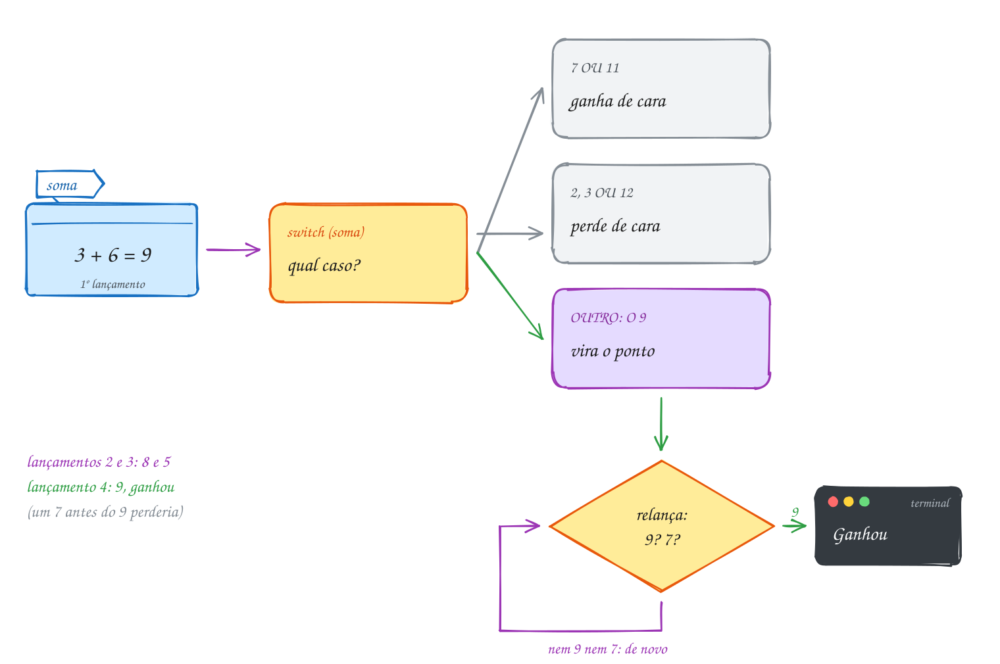
#include <stdio.h>
#include <stdlib.h>
int main(void) {
srand(21); // semente fixa: a rodada abaixo se repete (glibc)
int d1 = 1 + rand() % 6;
int d2 = 1 + rand() % 6;
int soma = d1 + d2;
int lancamentos = 1;
int ponto = 0;
int situacao; // 1 = ganhou, -1 = perdeu, 0 = continua
printf("Lançamento %d: %d + %d = %d\n", lancamentos, d1, d2, soma);
switch (soma) {
case 7:
case 11:
situacao = 1; // natural: ganha de cara
break;
case 2:
case 3:
case 12:
situacao = -1; // craps: perde de cara
break;
default:
situacao = 0; // virou o ponto
ponto = soma;
printf("Ponto: %d. Agora precisa repetir o %d antes de um 7.\n", ponto, ponto);
}
while (situacao == 0) {
d1 = 1 + rand() % 6;
d2 = 1 + rand() % 6;
soma = d1 + d2;
lancamentos++;
printf("Lançamento %d: %d + %d = %d\n", lancamentos, d1, d2, soma);
if (soma == ponto) {
situacao = 1;
} else if (soma == 7) {
situacao = -1;
}
}
printf("%s em %d lançamentos.\n", situacao == 1 ? "Ganhou" : "Perdeu", lancamentos);
return 0;
}
// Saída (glibc, Linux):
// Lançamento 1: 3 + 6 = 9
// Ponto: 9. Agora precisa repetir o 9 antes de um 7.
// Lançamento 2: 3 + 5 = 8
// Lançamento 3: 1 + 4 = 5
// Lançamento 4: 4 + 5 = 9
// Ganhou em 4 lançamentos.
O A054 vai além: menu com do...while, aposta validada e uma banca de R$ 100.
No fluxograma, as perguntas do primeiro lançamento acontecem uma vez; o
laço começa em "soma = novo lançamento" e volta pelo Não de "soma == 7?":
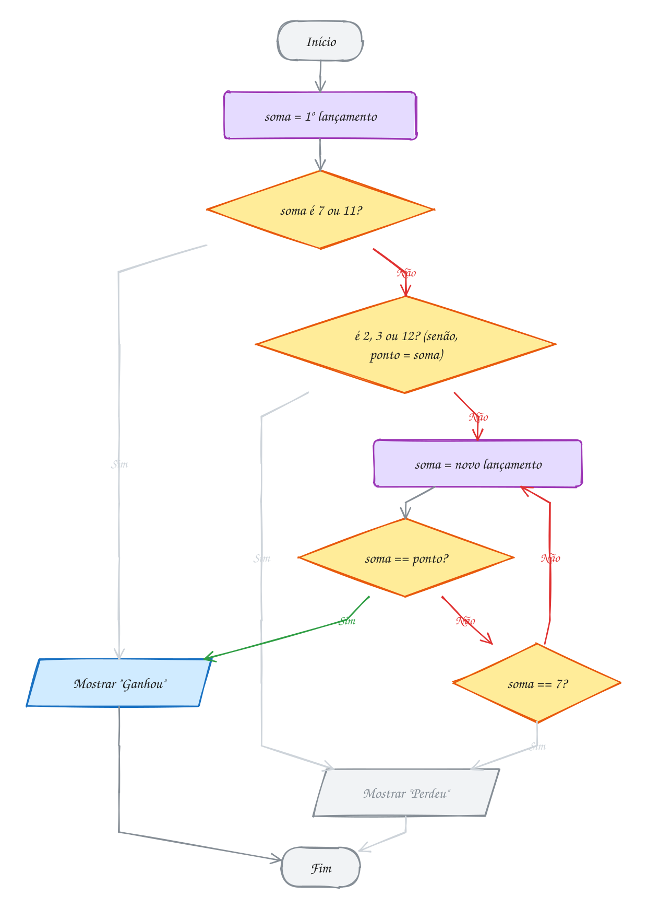
Exemplo A053 · As 36 jogadas do primeiro lançamento, sem sortear
#include <stdio.h>
int main(void) {
int natural = 0, craps = 0, ponto = 0;
// em vez de sortear, passa por TODAS as combinações dos dois dados
printf("d1\\d2 1 2 3 4 5 6\n");
for (int d1 = 1; d1 <= 6; d1++) {
printf("%5d", d1);
for (int d2 = 1; d2 <= 6; d2++) {
int soma = d1 + d2;
printf("%3d", soma);
switch (soma) {
case 7:
case 11:
natural++; // ganha de cara
break;
case 2:
case 3:
case 12:
craps++; // perde de cara
break;
default:
ponto++; // o jogo continua
}
}
printf("\n");
}
int total = natural + craps + ponto;
printf("Ganha de cara (7 ou 11): %2d de %d (%.1f%%)\n",
natural, total, 100.0 * natural / total);
printf("Perde de cara (2, 3 ou 12): %2d de %d (%.1f%%)\n",
craps, total, 100.0 * craps / total);
printf("Vira ponto: %2d de %d (%.1f%%)\n",
ponto, total, 100.0 * ponto / total);
return 0;
}
// Saída:
// d1\d2 1 2 3 4 5 6
// 1 2 3 4 5 6 7
// 2 3 4 5 6 7 8
// 3 4 5 6 7 8 9
// 4 5 6 7 8 9 10
// 5 6 7 8 9 10 11
// 6 7 8 9 10 11 12
// Ganha de cara (7 ou 11): 8 de 36 (22.2%)
// Perde de cara (2, 3 ou 12): 4 de 36 (11.1%)
// Vira ponto: 24 de 36 (66.7%)
gcc ~/LPEDC/material/A053.c -o ~/LPEDC/material/A053 && ~/LPEDC/material/A053
Exemplo A054 · Craps com banca, apostas e menu
#include <stdio.h>
#include <stdlib.h>
int main(void) {
srand(4); // troque por srand(time(NULL)) para jogar de verdade
int banca = 100;
int opcao;
int rodadas = 0, vitorias = 0;
do {
printf("\nBanca: R$ %d | 1 Jogar | 0 Sair: ", banca);
if (scanf("%d", &opcao) != 1) {
opcao = 0;
}
if (opcao != 1) {
continue; // 0 (ou qualquer outra coisa) vai para o teste e sai
}
int aposta;
do { // validação: de 1 até o que tem na banca
printf("Aposta (1 a %d): ", banca);
if (scanf("%d", &aposta) != 1) {
return 1;
}
} while (aposta < 1 || aposta > banca);
// a rodada: o mesmo algoritmo do texto, sem os printf de cada lance
int soma = (1 + rand() % 6) + (1 + rand() % 6);
int lancamentos = 1;
int ponto = soma;
int situacao = 0;
if (soma == 7 || soma == 11) {
situacao = 1;
} else if (soma == 2 || soma == 3 || soma == 12) {
situacao = -1;
}
while (situacao == 0) {
soma = (1 + rand() % 6) + (1 + rand() % 6);
lancamentos++;
if (soma == ponto) {
situacao = 1;
} else if (soma == 7) {
situacao = -1;
}
}
rodadas++;
if (situacao == 1) {
banca += aposta;
vitorias++;
printf("Ganhou no %dº lançamento! +R$ %d\n", lancamentos, aposta);
} else {
banca -= aposta;
printf("Perdeu no %dº lançamento. -R$ %d\n", lancamentos, aposta);
}
} while (opcao != 0 && banca > 0);
if (banca == 0) {
printf("\nA banca quebrou.\n");
}
printf("Rodadas: %d | Vitórias: %d | Saiu com R$ %d\n", rodadas, vitorias, banca);
return 0;
}
// Saída (glibc, Linux), com as entradas 1, 20, 1, 50, 1, 500, 30 e 0:
//
// Banca: R$ 100 | 1 Jogar | 0 Sair: 1
// Aposta (1 a 100): 20
// Ganhou no 2º lançamento! +R$ 20
//
// Banca: R$ 120 | 1 Jogar | 0 Sair: 1
// Aposta (1 a 120): 50
// Ganhou no 4º lançamento! +R$ 50
//
// Banca: R$ 170 | 1 Jogar | 0 Sair: 1
// Aposta (1 a 170): 500
// Aposta (1 a 170): 30
// Perdeu no 3º lançamento. -R$ 30
//
// Banca: R$ 140 | 1 Jogar | 0 Sair: 0
// Rodadas: 3 | Vitórias: 2 | Saiu com R$ 140
gcc ~/LPEDC/material/A054.c -o ~/LPEDC/material/A054 && ~/LPEDC/material/A054
Exercício E157 · ★☆☆
No craps, o 7 é o número mais perigoso (e o mais comum). Lance dois dados 36 000 vezes (com srand(time(NULL))) e conte quantas vezes a soma deu 7 e quantas deu 2. Mostre as contagens e as porcentagens com 1 casa.
Saída esperada (exemplo, os números mudam a cada execução):
Soma 7: 6043 (16.8%)
Soma 2: 1012 (2.8%)
Exercício E159 · ★★☆
Um número de 3 dígitos é de Armstrong quando a soma dos cubos dos dígitos dá o próprio número: 153 = 1 + 125 + 27. Mostre todos os números de Armstrong de 100 a 999 e quantos são.
Saída esperada:
153 370 371 407
Encontrados: 4
Exercício E160 · ★★☆
O controle de estoque da cantina começa com 20 salgados. Escreva o menu com do-while e switch ("1 Vender | 2 Repor | 0 Sair:"): 1 pergunta "Quantos?" e vende (se a quantidade for inválida ou maior que o estoque, mostra "Venda recusada."); 2 repõe uma caixa de 10 e mostra "Repôs 10."; 0 sai; qualquer outra mostra "Opção inválida.". No fim, mostra o estoque e o total vendido. Cada pedido de leitura termina com quebra de linha (\n).
Entrada:
1
5
1
3
0
Saída esperada:
1 Vender | 2 Repor | 0 Sair:
Quantos?
1 Vender | 2 Repor | 0 Sair:
Quantos?
1 Vender | 2 Repor | 0 Sair:
Estoque: 12 | Vendidos: 8
Exercício E161 · ★★★
O jogo dos 21 palitos: na mesa há 21 palitos. Você e o computador se revezam, cada um tirando 1, 2 ou 3. Quem tirar o ÚLTIMO palito perde. Você começa. Sua jogada é lida com do-while ("Você tira:") e só vale de 1 a 3 e no máximo o que sobrou. O computador tira (palitos - 1) % 4 (se der 0, tira 1). A cada jogada, mostre quantos palitos sobraram; no fim, quem perdeu. Cada pedido de leitura termina com quebra de linha (\n).
Entrada:
3
3
2
1
2
1
Saída esperada:
Você tira:
Sobram 18. O computador tira 1. Sobram 17.
Você tira:
Sobram 14. O computador tira 1. Sobram 13.
Você tira:
Sobram 11. O computador tira 2. Sobram 9.
Você tira:
Sobram 8. O computador tira 3. Sobram 5.
Você tira:
Sobram 3. O computador tira 2. Sobram 1.
Você tira:
Sobram 0. Você tirou o último palito. Perdeu!
30 exercícios que misturam os assuntos do módulo, no ritmo da prova. Arquivos P0301.c a P0330.c, em material/; resoluções em _respostas/03-repeticoes/lista/.
Exercício P0301 · ★☆☆ · A tabela do pão francês
A padaria quer colar no balcão uma tabela com o preço de 1 a 8 pães, a R$ 0.85 cada. Escreva um programa com um for que mostre a tabela, com a quantidade em 2 colunas e o preço em 5:
Saída esperada:
1 pão(es): R$ 0.85
2 pão(es): R$ 1.70
3 pão(es): R$ 2.55
4 pão(es): R$ 3.40
5 pão(es): R$ 4.25
6 pão(es): R$ 5.10
7 pão(es): R$ 5.95
8 pão(es): R$ 6.80
Resposta esperada: de R$ 0.85 a R$ 6.80.
Exercício P0302 · ★☆☆ · O desafio do cofrinho
No desafio do cofrinho, você guarda R$ 1 no dia 1, R$ 2 no dia 2, e assim por diante, um real a mais por dia. Escreva um programa com while que mostre quanto há no cofrinho ao fim dos dias 10, 20 e 30, e o total final:
Saída esperada:
Dia 10: R$ 55
Dia 20: R$ 210
Dia 30: R$ 465
Total em 30 dias: R$ 465
Exercício P0303 · ★☆☆ · As filas possíveis no banco
De quantas maneiras 10 pessoas podem formar uma fila? É 10! (10 × 9 × ... × 1). Escreva um programa com for que calcule 10! e 20!, num unsigned long long (o 20! já não cabe num int de jeito nenhum):
Saída esperada:
10! = 3628800
20! = 2432902008176640000
Resposta esperada: 3628800 e 2432902008176640000.
Exercício P0304 · ★☆☆ · Os dígitos do protocolo
O atendimento deu o protocolo 2026110903. Escreva um programa com while que conte quantos dígitos ele tem e some esses dígitos, tirando um por vez com % e / por 10. O número não cabe num int: use long long.
Saída esperada:
Protocolo: 2026110903
Dígitos: 10
Soma dos dígitos: 24
Resposta esperada: 10 dígitos, soma 24.
Exercício P0305 · ★☆☆ · O tamanho do açaí
A tela do quiosque pede o tamanho do açaí: 1 (300 ml, R$ 12.00), 2 (500 ml, R$ 18.00) ou 3 (700 ml, R$ 24.00). Escreva um programa com do...while que repita a pergunta até a pessoa digitar 1, 2 ou 3, e depois mostre o preço. Um exemplo de interação, em que a pessoa errou duas vezes:
Saída esperada:
Tamanho (1, 2 ou 3): 0
Opção inválida.
Tamanho (1, 2 ou 3): 5
Opção inválida.
Tamanho (1, 2 ou 3): 2
Açaí de 500 ml: R$ 18.00
Resposta esperada: com 0, 5 e 2, Açaí de 500 ml: R$ 18.00.
Exercício P0306 · ★☆☆ · Os números da sorte da promoção
Na promoção do mercado, ganham brinde os cupons cujo número, de 1 a 99, é múltiplo de 3 ou de 5. Escreva um programa que conte quantos números de 1 a 99 ganham brinde e some esses números:
Saída esperada:
Cupons premiados: 46
Soma dos números: 2318
Resposta esperada: 46 cupons, soma 2318.
Exercício P0307 · ★☆☆ · A fofoca no grupo da família
Uma fofoca começa com 1 pessoa. A cada rodada, cada pessoa que sabe conta para outras 2, então quem sabe triplica (1, 3, 9, 27...). Escreva um programa com while que mostre cada rodada e pare na primeira em que mais de 1 milhão de pessoas já saibam:
Saída esperada:
Rodada 1: 3 pessoas
Rodada 2: 9 pessoas
Rodada 3: 27 pessoas
Rodada 4: 81 pessoas
Rodada 5: 243 pessoas
Rodada 6: 729 pessoas
Rodada 7: 2187 pessoas
Rodada 8: 6561 pessoas
Rodada 9: 19683 pessoas
Rodada 10: 59049 pessoas
Rodada 11: 177147 pessoas
Rodada 12: 531441 pessoas
Rodada 13: 1594323 pessoas
Passou de 1 milhão na rodada 13
Exercício P0308 · ★☆☆ · O jogo do PIM
No jogo do PIM, a turma conta de 1 em diante, mas todo múltiplo de 4, e todo número que termina em 4, vira "PIM". Escreva um programa que mostre a contagem de 1 a 20, um número por linha, trocando esses números por PIM:
Saída esperada:
1
2
3
PIM
5
6
7
PIM
9
10
11
PIM
13
PIM
15
PIM
17
18
19
PIM
Resposta esperada: PIM no 4, 8, 12, 14, 16 e 20.
Exercício P0309 · ★☆☆ · O mapa da sala de cinema
A sala pequena do cinema tem as fileiras A a E e 6 cadeiras em cada. Escreva um programa com dois for, um dentro do outro, que mostre o mapa dos assentos. Use um char para a fileira: 'A' + 1 é 'B', porque char é número.
Saída esperada:
A1 A2 A3 A4 A5 A6
B1 B2 B3 B4 B5 B6
C1 C2 C3 C4 C5 C6
D1 D2 D3 D4 D5 D6
E1 E2 E3 E4 E5 E6
Resposta esperada: 5 linhas de 6 assentos, de A1 a E6.
Exercício P0310 · ★☆☆ · A parcela que sobrou
A geladeira foi parcelada em 10 vezes de R$ 189.90, mas o programa abaixo mostra 11 parcelas e um total errado. O erro está no for, de propósito. Conserte o laço para mostrar as 10 parcelas e o total certo:
Saída esperada:
Parcela 1: R$ 189.90
Parcela 2: R$ 189.90
Parcela 3: R$ 189.90
Parcela 4: R$ 189.90
Parcela 5: R$ 189.90
Parcela 6: R$ 189.90
Parcela 7: R$ 189.90
Parcela 8: R$ 189.90
Parcela 9: R$ 189.90
Parcela 10: R$ 189.90
Total: R$ 1899.00
Resposta esperada: 10 parcelas, Total: R$ 1899.00.
Exercício P0311 · ★★☆ · O pedido de trás para frente
O sistema da loja grava o número do pedido invertido para embaralhar a etiqueta. Escreva um programa com while que inverta o pedido 120345 (o resultado é 543021) e confira se o número é igual ao seu inverso (capicua). Faça o mesmo com 12321:
Saída esperada:
120345 invertido: 543021 (não é capicua)
12321 invertido: 12321 (é capicua)
Resposta esperada: 543021 e 12321.
Exercício P0312 · ★★☆ · Os dois ônibus no mesmo ponto
No terminal, o ônibus 101 sai a cada 12 minutos e o 202 a cada 18. Os dois saíram juntos às 06:00. Escreva um programa que descubra, com um laço, daqui a quantos minutos eles saem juntos de novo (o MMC de 12 e 18), e mostre os três próximos horários em que isso acontece:
Saída esperada:
Saem juntos a cada 36 minutos
06:36
07:12
07:48
Resposta esperada: 36 minutos; 06:36, 07:12 e 07:48.
Exercício P0313 · ★★☆ · Os números amigos
Dois números são amigos quando a soma dos divisores próprios de um (os divisores menores que ele) dá o outro, e vice-versa. Escreva um programa que some os divisores próprios de 220 e de 284 com um laço e diga se eles são amigos:
Saída esperada:
Divisores de 220 somam 284
Divisores de 284 somam 220
220 e 284 são amigos
Resposta esperada: 284 e 220, são amigos.
Exercício P0314 · ★★☆ · O próximo ano primo
2026 não é primo (é par). Escreva um programa que ache o primeiro ano primo depois de 2026 e o último ano primo antes de 2026. Para testar se n é primo, basta tentar os divisores d com d * d <= n, e dá para parar no primeiro que dividir (break):
Saída esperada:
Próximo ano primo: 2027
Último ano primo antes de 2026: 2017
Resposta esperada: 2027 e 2017.
Exercício P0315 · ★★☆ · A dívida do rotativo
Uma dívida de R$ 1000.00 no rotativo do cartão cresce 14% ao mês (juros sobre juros). Escreva um programa com while que mostre o saldo mês a mês até a dívida passar do dobro, e diga em quantos meses isso aconteceu:
Saída esperada:
Mês 1: R$ 1140.00
Mês 2: R$ 1299.60
Mês 3: R$ 1481.54
Mês 4: R$ 1688.96
Mês 5: R$ 1925.41
Mês 6: R$ 2194.97
A dívida dobrou em 6 meses
Exercício P0316 · ★★☆ · O triângulo de Floyd
No triângulo de Floyd, os números naturais vão enchendo as linhas: a linha 1 tem um número, a linha 2 tem dois, e assim por diante. Escreva um programa com laços aninhados que mostre as 5 primeiras linhas, cada número com %3d, e a soma da última linha:
Saída esperada:
1
2 3
4 5 6
7 8 9 10
11 12 13 14 15
Soma da linha 5: 65
Exercício P0317 · ★★☆ · A eleição do síndico
Na assembleia, cada morador digita o voto: 1 para a Marta, 2 para o Jorge e qualquer outro número positivo é nulo. O 0 encerra a votação (sentinela). Escreva um programa que conte os votos e mostre o resultado, o percentual de nulos e quem venceu (ou se deu empate). Um exemplo de interação, com os votos 1 2 1 7 1 2 0:
Saída esperada:
Voto (0 encerra): Voto (0 encerra): Voto (0 encerra): Voto (0 encerra): Voto (0 encerra): Voto (0 encerra): Voto (0 encerra):
Marta: 3
Jorge: 2
Nulos: 1 (16.7%)
Vencedor: Marta
Resposta esperada: Marta 3, Jorge 2, Nulos 1 (16.7%), Vencedor: Marta.
Exercício P0318 · ★★☆ · A soma que demora a crescer
A soma 1 + 1/2 + 1/3 + 1/4 + ... cresce para sempre, mas bem devagar. Escreva um programa com while que descubra quantos termos são precisos para a soma passar de 3, e depois de 5, e mostre a soma em cada caso:
Saída esperada:
Passa de 3 com 11 termos (soma 3.0199)
Passa de 5 com 83 termos (soma 5.0021)
Resposta esperada: 11 termos e 83 termos.
Exercício P0319 · ★★☆ · O desconto por quantidade
A distribuidora de água dá 2% de desconto por galão comprado, até o máximo de 15%. O galão custa R$ 12.00. Escreva um programa que mostre a tabela de 1 a 10 galões, com o desconto e o total de cada linha:
Saída esperada:
1 galão(ões): 2% -> R$ 11.76
2 galão(ões): 4% -> R$ 23.04
3 galão(ões): 6% -> R$ 33.84
4 galão(ões): 8% -> R$ 44.16
5 galão(ões): 10% -> R$ 54.00
6 galão(ões): 12% -> R$ 63.36
7 galão(ões): 14% -> R$ 72.24
8 galão(ões): 15% -> R$ 81.60
9 galão(ões): 15% -> R$ 91.80
10 galão(ões): 15% -> R$ 102.00
Resposta esperada: a tabela acima, terminando em R$ 102.00.
Exercício P0320 · ★★☆ · A média da turma que dá errado
O programa abaixo deveria somar as 5 notas do simulado (7, 9, 6, 8 e 10) e mostrar a média 8.0, mas mostra 2.0. São dois erros de acumulador, de propósito: um zera a soma no lugar errado e o outro faz a divisão inteira. Conserte os dois:
Saída esperada:
Soma: 40
Média: 8.0
Resposta esperada: Soma: 40, Média: 8.0.
Exercício P0321 · ★★★ · O calendário de qualquer mês
Escreva um programa que leia o mês e o ano e mostre o calendário daquele mês, com a semana começando no domingo e cada dia em 3 posições (%3d). O programa descobre sozinho em que dia da semana cai o dia 1, com a fórmula (a = (14 − mês) / 12, y = ano − a, m = mês + 12a − 2, semana = (1 + y + y/4 − y/100 + y/400 + 31m/12) % 7), e quantos dias o mês tem, com bissexto para fevereiro. Repita a leitura até o mês valer de 1 a 12. No fim, mostre quantos sábados e domingos o mês tem:
Saída esperada:
Mês e ano: 2 2028
D S T Q Q S S
1 2 3 4 5
6 7 8 9 10 11 12
13 14 15 16 17 18 19
20 21 22 23 24 25 26
27 28 29
Fins de semana: 8 dias
Resposta esperada: fevereiro de 2028 começa na terça e tem 29 dias; 8 dias de fim de semana.
Exercício P0322 · ★★★ · De decimal para qualquer base
Escreva um programa que leia um número inteiro positivo e uma base de 2 a 16 e mostre o número naquela base, com os dígitos de 10 a 15 como A a F. Ainda não há vetores, então você não pode guardar os restos para mostrar ao contrário: em vez disso, ache a maior potência da base que cabe no número e vá descendo, mostrando um dígito por potência. Repita a pergunta da base até ela valer de 2 a 16. Duas interações:
Saída esperada:
Número e base: 2026 16
2026 na base 16: 7EA
Número e base: 2026 2
2026 na base 2: 11111101010
Resposta esperada: 7EA na base 16; 11111101010 na base 2; 2026 na base 8 é 3752.
Exercício P0323 · ★★★ · Validação de CPF com laço
Escreva um programa que leia um CPF de 11 dígitos, só números, num long long, e diga se ele é válido. Separe os dígitos com um laço. Regras: CPF com os 11 dígitos iguais é inválido; o 1º verificador vem dos 9 primeiros dígitos com pesos de 10 a 2; o 2º vem dos 10 primeiros com pesos de 11 a 2; em cada um, r = soma % 11 e o dígito é 0 se r < 2, senão 11 − r. Três interações:
Saída esperada:
CPF (11 dígitos): 11144477735
CPF válido
CPF (11 dígitos): 11144477734
CPF inválido: o 2º dígito deveria ser 5
CPF (11 dígitos): 22222222222
CPF inválido: dígitos todos iguais
Resposta esperada: as três saídas acima.
Exercício P0324 · ★★★ · Os primos até 10 000
Sem vetor, não dá para montar o crivo de Eratóstenes, mas dá para testar cada número com a versão econômica: descarte os pares (fora o 2) e tente só os divisores ímpares d com d * d <= n. Escreva um programa que conte os primos até 10 000, mostre o maior deles e o maior buraco entre dois primos seguidos (e quais são eles):
Saída esperada:
Primos até 10000: 1229
Maior primo: 9973
Maior buraco: 36, entre 9551 e 9587
Resposta esperada: 1229 primos, maior 9973, buraco de 36 entre 9551 e 9587.
Exercício P0325 · ★★★ · A rotina de Kaprekar
Pegue um número de 4 dígitos que não tenha os quatro iguais. Ordene os dígitos do maior para o menor e do menor para o maior, e subtraia. Repita com o resultado (mantendo zeros à esquerda, como em 0378). Em no máximo 7 passos você chega em 6174 e fica lá para sempre. Escreva um programa que mostre os passos a partir de 3524. Ainda sem vetor, para ordenar os dígitos, ande pelos valores de 9 a 0 e, para cada valor, conte quantas vezes ele aparece:
Saída esperada:
5432 - 2345 = 3087
8730 - 0378 = 8352
8532 - 2358 = 6174
Chegou em 6174 em 3 passos
Resposta esperada: 3 passos até 6174.
Exercício P0326 · ★★★ · A tabela do empréstimo
Você pegou R$ 1200.00 emprestado em 6 parcelas iguais, com juros de 2% ao mês (tabela Price). A parcela é P = V · i / (1 − (1 + i)^−n). Todo mês, os juros são i vezes o saldo devedor, e o resto da parcela amortiza a dívida. Escreva um programa que mostre a tabela mês a mês e, no fim, o total pago e o total de juros:
Saída esperada:
Parcela: R$ 214.23
Mês Juros Amortização Saldo
1 24.00 190.23 1009.77
2 20.20 194.04 815.73
3 16.31 197.92 617.82
4 12.36 201.87 415.94
5 8.32 205.91 210.03
6 4.20 210.03 0.00
Total pago: R$ 1285.39
Total de juros: R$ 85.39
gcc ~/LPEDC/material/P0326.c -o ~/LPEDC/material/P0326 -lm && ~/LPEDC/material/P0326
Exercício P0327 · ★★★ · O juro escondido no parcelamento
A loja anuncia uma TV de R$ 1000.00 "em 10 vezes de R$ 120.00". Qual é o juro mensal escondido? Não há fórmula direta, mas dá para achar por bissecção: a parcela P(i) = V · i / (1 − (1 + i)^−n) cresce com i. Comece com a taxa entre 0.0001 e 1 (0,01% e 100%), teste o meio, e jogue fora a metade em que a resposta não está, até o intervalo ficar menor que 0.0000001. Mostre a taxa e quantas voltas foram precisas:
Saída esperada:
Taxa mensal: 3.46%
Voltas da bissecção: 24
Conferindo: parcela de R$ 120.00
gcc ~/LPEDC/material/P0327.c -o ~/LPEDC/material/P0327 -lm && ~/LPEDC/material/P0327
Exercício P0328 · ★★★ · As datas palíndromas do século
A data 12/02/2021, escrita como 12022021, se lê igual de trás para frente. Escreva um programa que ache todas as datas palíndromas (ddmmaaaa) de 2000 a 2099. Para cada ano, inverta os 4 dígitos: os dois primeiros do inverso são o dia, os dois últimos são o mês. Mostre só as datas que existem de verdade (mês de 1 a 12, dia dentro do mês, fevereiro com bissexto) e quantas são:
Saída esperada:
10/02/2001
20/02/2002
01/02/2010
11/02/2011
21/02/2012
02/02/2020
12/02/2021
22/02/2022
03/02/2030
13/02/2031
23/02/2032
04/02/2040
14/02/2041
24/02/2042
05/02/2050
15/02/2051
25/02/2052
06/02/2060
16/02/2061
26/02/2062
07/02/2070
17/02/2071
27/02/2072
08/02/2080
18/02/2081
28/02/2082
09/02/2090
19/02/2091
29/02/2092
Datas palíndromas no século: 29
Resposta esperada: 29 datas, de 10/02/2001 a 29/02/2092.
Exercício P0329 · ★★★ · Monty Hall no programa de auditório
No programa de auditório, há 3 portas e um carro atrás de uma delas. Você escolhe uma porta; o apresentador, que sabe onde está o carro, abre outra porta com um bode; e pergunta se você quer trocar. Escreva uma simulação com rand de 1 000 000 de rodadas que conte quantas vezes você ganharia ficando e quantas ganharia trocando, e mostre os percentuais sem casas decimais:
Saída esperada:
Rodadas: 1000000
Ficando: 33% de vitórias
Trocando: 67% de vitórias
Resposta esperada: 33% ficando, 67% trocando.
Exercício P0330 · ★★★ · O triângulo de Pascal
No triângulo de Pascal, cada número é a soma dos dois de cima. Sem vetor, dá para calcular cada linha da esquerda para a direita: o primeiro é 1, e o próximo é c = c * (n − k) / (k + 1), onde n é o número da linha (começando em 0) e k a posição. Escreva um programa que mostre as 7 primeiras linhas, centralizadas (2 espaços por linha que falta), cada número com %4d, e a soma de cada linha:
Saída esperada:
1 (soma 1)
1 1 (soma 2)
1 2 1 (soma 4)
1 3 3 1 (soma 8)
1 4 6 4 1 (soma 16)
1 5 10 10 5 1 (soma 32)
1 6 15 20 15 6 1 (soma 64)
Resposta esperada: a última linha é 1 6 15 20 15 6 1, soma 64.
Problemas extras, do médio ao difícil. Crie um arquivo seu para cada um e compile com as flags de estudo.
1. Os primos até 100. Mostre todos os números primos de 2 a 100 e quantos
são. Para cada candidato, teste os divisores com um laço de dentro e saia dele
com break no primeiro divisor encontrado.
São 25 primos, de 2 a 97. Para ficar rápido, o laço de dentro só
precisa ir até a raiz do número: for (d = 2; d * d <= n; d++). Se n tem
um divisor maior que a raiz, tem também um menor, que já foi testado.
2. Fibonacci passa de mil. A sequência começa com 1, 1, e cada termo é a soma dos dois anteriores. Escreva um programa que mostre os termos numa linha até o primeiro maior que 1000 e, na linha de baixo, esse termo e a posição dele, contando as posições numa variável.
1 1 2 3 5 8 13 21 34 55 89 144 233 377 610 987 1597
Primeiro acima de 1000: 1597 (posição 17)
É um while (b <= 1000): você sabe quando parar, mas não quantas voltas são.
O truque é guardar os dois últimos: prox = a + b; a = b; b = prox;. A
posição começa em 2 (os dois primeiros 1 já estão contados) e sobe a cada
volta.
3. O MDC de Euclides. O maior divisor comum de dois números não muda se
você trocar o par (a, b) por (b, a % b). Repita até b virar 0: o MDC é o
a que sobrou. Calcule o MDC de 1071 e 462 e conte as voltas.
(1071, 462) → (462, 147) → (147, 21) → (21, 0). MDC = 21, em 3
voltas. O laço precisa de uma variável auxiliar: resto = a % b; a = b; b = resto;. Esse algoritmo tem mais de 2.300 anos e ainda é o que se usa.
4. Decimal para binário. Leia um inteiro de 0 a 255 e mostre os 8 bits, do mais significativo para o menos. Teste com 200.
200 → 11001000. Um for com a potência começando em 128 e dividindo por
2 a cada volta: se n >= potencia, mostra 1 e subtrai; senão, mostra 0. Pelo
caminho do % 2 os bits saem ao contrário (do último para o primeiro), e
sem vetor não dá para guardar e inverter.
5. A raiz quadrada de Herão. Para calcular a raiz de n, comece com
x = n e repita x = (x + n / x) / 2 até a diferença entre dois valores
seguidos ficar menor que 0,000000001. Calcule a raiz de 2 e conte as voltas.
Compare com sqrt(2).
1.414213562 em 5 voltas (2 → 1,5 → 1,41667 → 1,41421569 →
1,41421356...). O número de casas certas praticamente dobra a cada volta. É um
do...while (calcula, depois compara com o anterior) e usa fabs de
<math.h> para a diferença.
6. O losango. Leia um número ímpar n (repita até ser ímpar, com
do...while) e desenhe um losango de asteriscos com n linhas. Com n = 5:
*
***
*****
***
*
São duas pirâmides: a de cima com (n + 1) / 2 linhas, crescendo (como no
exercício E143), e a de baixo com as linhas restantes, encolhendo. Em cada
linha, primeiro os espaços, depois os asteriscos. Para n = 9, a linha do
meio tem 9 asteriscos.
7. O craps tem truque? Jogue 100 000 rodadas de craps (o algoritmo da
rodada do assunto 0027, sem os printf, dentro de um for) e calcule a porcentagem de
vitórias e a média de lançamentos por rodada.
Perto de 49,3% de vitórias e 3,4 lançamentos por rodada (na glibc com semente 2026: 49,24% e 3,37). A conta exata dá 244/495, ou 49,29%. A casa ganha 1,4% de todo o dinheiro apostado, no longo prazo. A simulação é um laço de rodadas com o laço de relançamentos dentro: os contadores da rodada recomeçam a cada volta de fora.
8. Triplas pitagóricas. Ache todas as triplas a < b < c, com c até 30,
tais que a² + b² = c². Use três laços aninhados (força bruta) e conte quantas
são.
São 11: (3, 4, 5), (5, 12, 13), (6, 8, 10), (7, 24, 25), (8, 15, 17),
(9, 12, 15), (10, 24, 26), (12, 16, 20), (15, 20, 25), (18, 24, 30) e (20, 21,
29). Começando o laço de b em a + 1 e o de c em b + 1, cada tripla
aparece uma vez só. Dá para tirar o terceiro laço: calcule c * c e teste se
é um quadrado perfeito.
9. Contando setes. Escreva um programa que conte quantas vezes o dígito 7 aparece quando você escreve todos os números de 1 a 1000, e mostre o total.
Setes de 1 a 1000: 300
Um laço de 1 a 1000 e, dentro, um while que desmonta uma cópia do número
com % 10 e / 10 (como o A040), contando os dígitos 7. Se você desmontar o
próprio contador do for, o laço nunca termina. Para conferir: o 7 aparece
100 vezes na casa das unidades, 100 na das dezenas e 100 na das centenas.
10. O computador adivinha. Inverta o jogo do E153: você pensa num número de 1 a 1000, e o computador chuta. A cada chute você responde 1 (mais alto), 2 (mais baixo) ou 0 (acertou). Escreva esse jogo. Depois, para achar o pior caso, troque você por um laço que testa cada número secreto de 1 a 1000 e calcula a resposta sozinho: conte os chutes de cada número e mostre o maior número de chutes, o primeiro secreto que precisou dele e quantos secretos precisaram dele.
Pior caso: 10 chutes (primeiro número assim: 2)
Números que precisam de 10 chutes: 489
O computador guarda o intervalo possível (menor = 1, maior = 1000), chuta
sempre o meio, (menor + maior) / 2, e corta metade a cada resposta: com 1,
menor = chute + 1; com 2, maior = chute - 1. No máximo 10 chutes, porque
2¹⁰ = 1024 ≥ 1000. É a busca binária, que volta no assunto 0090.
Questões reais do POSCOMP (SBC) sobre este módulo. O enunciado está no caderno oficial: abra o link, resolva e confira o gabarito.
| Ano | Questão | Assunto | Gabarito | Prova |
|---|---|---|---|---|
| 2024 | 25 | Instruções de repetição while, do-while, for | B | caderno |
| 2025 | 46 | Laço for com iterações conhecidas | a conferir no gabarito oficial | caderno |
O gabarito oficial de 2025 não estava disponível quando este material foi montado.
Questões objetivas no formato da prova do PPGI: uma alternativa certa. Faça o teste de mesa: uma linha por volta, com o valor de cada variável.
1. Quantas vezes o corpo do laço executa, e quanto vale i no fim?
int i = 10, cont = 0;
while (i > 0) {
i -= 3;
cont++;
}
i vale 1i vale 0i vale 0i vale -2i vale 0(D). i passa por 10, 7, 4 e 1, sempre positivo na pergunta: 4 voltas.
Na última, 1 - 3 dá -2, e aí i > 0 é falso. O i nunca vale 0. Veja 0020.
2. Sobre as estruturas de repetição do C, considere as afirmações e marque a alternativa CORRETA.
I. O do...while executa o corpo pelo menos uma vez.
II. for (;;) é um erro de compilação, porque falta a condição.
III. O continue encerra o laço por completo.
IV. O break dentro do laço mais interno de dois laços aninhados encerra só esse laço interno.
(A) Apenas I e IV
(B) Apenas I e II
(C) Apenas II e III
(D) Apenas III e IV
(E) Apenas I, III e IV
(A). I é verdadeira: o teste fica no fim. II é falsa: condição omitida vale verdadeiro, e for (;;) é o laço infinito clássico. III é falsa: o continue só pula para a próxima volta. IV é verdadeira: o break sai do laço mais próximo. Veja 0021, 0022 e 0023.
3. Qual a saída?
int j;
for (j = 0; j < 5; j++);
printf("%d\n", j);
(C). O ; logo depois do for é um corpo vazio: o laço só conta de
0 até 5 e acaba. O printf, apesar do recuo, está fora do laço e roda uma vez,
com j valendo 5 (o valor que fez a condição falhar). Veja 0022.
4. Quantas vezes c++ executa?
int c = 0;
for (int a = 0; a < 4; a++)
for (int b = a; b < 4; b++)
c++;
(E). O laço de dentro começa em a: roda 4, 3, 2 e 1 vezes, para a
igual a 0, 1, 2 e 3. A soma 4 + 3 + 2 + 1 é 10, ou n (n + 1) / 2 com
n = 4. O 16 seria com b começando sempre em 0. Veja 0024.
5. Qual o valor de s no fim?
int s = 0;
for (int k = 1; k <= 10; k++) {
if (k % 3 == 0) continue;
if (k > 7) break;
s += k;
}
(B). O continue pula os múltiplos de 3 (3 e 6) e vai para o k++. O
break encerra o laço no k = 8. Somam 1 + 2 + 4 + 5 + 7 = 19. O 28 seria a
soma de 1 a 7 sem o continue. Veja 0023.
6. Qual valor o pseudocódigo escreve?
x ← 1
repita
x ← x * 2
até x > 20
escreva x
(D). x passa por 2, 4, 8, 16 e 32. O repita ... até testa no fim e
para quando a condição fica verdadeira: só com 32 o x > 20 vale. Em C,
fica do { x = x * 2; } while (!(x > 20));. Veja 0021.
7. Qual a saída?
int k = 0;
while (k++ < 3)
printf("%d ", k);
printf("| %d\n", k);
1 2 3 | 40 1 2 | 31 2 3 | 30 1 2 3 | 41 2 | 3(A). O k++ compara o valor antigo e só depois soma 1. As
comparações são 0 < 3, 1 < 3 e 2 < 3 (verdade), e dentro do corpo o k já
vale 1, 2 e 3. A quarta comparação, 3 < 3, é falsa, mas o k++ roda mesmo
assim: k termina em 4. Veja 0020 e 0009.
8. Quantas vezes o corpo do laço executa?
for (unsigned u = 3; u >= 0; u--)
printf("%u\n", u);
(E). Um unsigned nunca é negativo, então u >= 0 é sempre
verdade. Depois do 0, u-- dá a volta para o maior unsigned (4294967295
com 32 bits) e o laço segue. O -Wextra avisa: comparison of unsigned expression in '>= 0' is always true. Veja 0022 e 0003.
9. Considere as afirmações sobre laços e marque a alternativa CORRETA.
I. Com n = 0, um for (int i = 0; i < n; i++) executa o corpo zero vezes, e um do...while equivalente o executa uma vez.
II. Dois for aninhados, ambos de 0 a n - 1, executam o corpo interno n * n vezes.
III. Um ; logo depois do ) do for é erro de compilação.
IV. A variável declarada no cabeçalho, em for (int i = 0; ...), continua visível depois do laço.
(A) Apenas I
(B) Apenas I e II
(C) Apenas II e IV
(D) Apenas I, II e III
(E) Apenas III e IV
(B). I e II são verdadeiras. III é falsa: o ; compila e vira corpo vazio, e o printf seguinte roda uma vez só (veja a questão 3). IV é falsa: desde o C99, i morre no fim do for. Veja 0020, 0021, 0022 e 0024.
while, do-while, for, break e continue.